2. 第 2 部分
2.1. 引言
我们将首先回顾第一部分的内容，特别是其中采用的三层架构[Web、Domain、DAO]。在之前的解决方案中，[DAO]层仅作为测试层：数据源通过[ArrayList]对象实现。本文将重点探讨[DAO]层，并介绍当数据存储在数据库管理系统（DBMS）中时，该层的多种可能实现方案。
使用的工具：
- Firebird 数据库管理系统——参见附录第 3.5 节。
- MSDE（Microsoft Data Engine）数据库管理系统——参见附录第3.12节。
- IBExpert 个人版，用于 Firebird 数据库管理系统（DBMS）的图形化管理——参见附录第 3.6 节。
- EMS MS SQL Manager，用于 MSDE 数据库管理系统（DBMS）的图形化管理——参见附录第 3.14 节。
- Ibatis SqlMap，用于 DBMS 数据访问层——参见第 2.5.6.2 节。
按初级-中级-高级的难度等级划分，本文档属于[中级-高级]类别。理解本文需要具备多种先决条件。其中部分内容可在笔者撰写的其他文档中找到。遇到此类情况，我会进行引用。不言而喻，这仅为建议，读者可自由选用自己偏好的资源。
- VB.NET 语言：[通过示例了解 VB.NET]
- VB.NET Web 编程：[ASP.NET 1.1 Web 开发]
- Spring IoC 的使用：[Spring IoC for .NET]
- iBatis SqlMap 文档：[http://prdownloads.sourceforge.net/ibatisnet/DevGuide.pdf?download]
- Firebird 文档：[http://firebird.sourceforge.net/pdfmanual/Firebird-1.5-QuickStart.pdf]
- Spring.net 文档：[http://www.springframework.net/documentation.html]
2.2. webarticles 应用程序 - 评测
在此，我们将介绍第 1 部分中讨论的简化版电子商务 Web 应用程序的组成部分。该应用程序允许 Web 用户：
- 查看数据库中的商品列表
- 将其中部分商品加入电子购物车
- 确认购物车。此确认操作仅会更新数据库中已购商品的库存数量。
2.2.1. 应用程序视图
向用户展示的不同视图如下：
 |
 |
 |
- [ERRORS] 视图，用于报告任何应用程序错误

2.2.2. 应用程序总体架构
在第 1 部分中构建的应用程序采用三层架构：
 |
- 通过使用接口，这三层已被设计为相互独立
- 各层之间的集成是通过Spring实现的
- 每个层都有自己的命名空间：web（UI层）、domain（业务层）和dao（数据访问层）。
该应用程序遵循MVC（模型-视图-控制器）架构。若参考上方的分层图，MVC架构的对应关系如下：
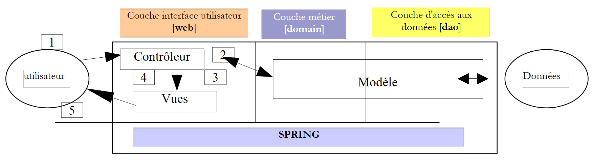 |
客户端请求的处理流程如下：
- 客户端向控制器发送请求。在此情况下，该控制器是一个承担特定角色的 .aspx 页面。它处理所有客户端请求，是应用程序的入口点，即 MVC 架构中的 C。
- 控制器处理该请求。为此，它可能需要业务层的协助，即 MVC 架构中的“M”。
- 控制器从业务层接收响应。客户端的请求已处理完毕。这可能触发多种响应。一个典型的例子是
- 若请求无法正确处理，则显示错误页面
- 否则则显示确认页面
- 控制器选择要发送给客户端的响应（即视图）。这通常是一个包含动态元素的页面。控制器将这些元素提供给视图。
- 视图被发送给客户端。这就是 MVC 中的 V。
2.2.3. 模型
MVC中的M由以下元素组成：
2.2.3.1. 数据库
该数据库仅包含一个名为 ARTICLES 的表，该表是通过以下 SQL 命令生成的：
CREATE TABLE ARTICLES (
ID INTEGER NOT NULL,
NOM VARCHAR(20) NOT NULL,
PRIX NUMERIC(15,2) NOT NULL,
STOCKACTUEL INTEGER NOT NULL,
STOCKMINIMUM INTEGER NOT NULL
);
/* constraints */
ALTER TABLE ARTICLES ADD CONSTRAINT CHK_ID check (ID>0);
ALTER TABLE ARTICLES ADD CONSTRAINT CHK_PRIX check (PRIX>=0);
ALTER TABLE ARTICLES ADD CONSTRAINT CHK_STOCKACTUEL check (STOCKACTUEL>=0);
ALTER TABLE ARTICLES ADD CONSTRAINT CHK_STOCKMINIMUM check (STOCKMINIMUM>=0);
ALTER TABLE ARTICLES ADD CONSTRAINT CHK_NOM check (NOM<>'');
ALTER TABLE ARTICLES ADD CONSTRAINT UNQ_NOM UNIQUE (NOM);
/* primary key */
ALTER TABLE ARTICLES ADD CONSTRAINT PK_ARTICLES PRIMARY KEY (ID);
用于唯一标识商品的主键 | |
项目名称 | |
其价格 | |
当前库存 | |
库存水平低于该值时必须下达补货订单 |
2.2.3.2. 该模型的命名空间
模型 M 以两个命名空间的形式提供：
- istia.st.articles.dao：包含 [dao] 层的数据访问类
- istia.st.articles.domain：包含 [domain] 层的业务类
每个命名空间都包含在各自的“assembly”文件中：
assembly | 内容 | role |
webarticles-dao | - [IArticlesDao]：用于访问 [dao] 层的接口。这是 [domain] 层可见的唯一接口。它看不到其他接口。 - [Article]：定义文章的类 - [ArticlesDaoArrayList]：使用 [ArrayList] 类实现 [IArticlesDao] 接口的类 | 数据访问层 - 完全位于 Web 应用程序三层架构的 [dao] 层内 |
webarticles-domain | - [IArticlesDomain]：用于访问 [domain] 层的接口。它是 Web 层可见的唯一接口，不涉及其他接口。 - [ArticlePurchases]：实现 [IArticlesDomain] 的类 - [Purchase]：表示客户购买行为的类 - [Cart]：表示客户总购买量的类 | 代表 Web 购买模型——完全位于 Web 应用程序三层架构的 [domain] 层中 |
2.2.4. [webarticles] 应用程序的部署与测试
2.2.4.1. 部署
我们将本文第 1 部分中开发的应用程序部署到名为 [runtime] 的文件夹中：
 |  |
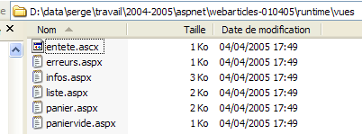 |
注释：
[runtime] 文件夹包含三个文件和两个子文件夹：
- 控制器 [global.asax] 和 [main.aspx]
- 配置文件 [web.config]
- [bin] 文件夹，其中包含：
- 三层架构的 DLL 文件 [webarticles-dao.dll]、[webarticles-domain.dll]、[webarticles-web.dll]
- Spring 所需的文件 [Spring-Core.*]、[log4net.dll]
- [views] 文件夹，其中包含各种视图的呈现代码。
- 由于其编译版本已包含在 DLL 中，因此无需保留 .vb 代码文件。
2.2.4.2. 测试
我们将 [Cassini] Web 服务器配置如下：

使用：
物理路径：D:\data\serge\work\2004-2005\aspnet\webarticles-010405\runtime\
虚拟路径：/webarticles
使用浏览器，我们请求 URL [http://localhost/webarticles/main.aspx]

回顾一下，[dao] 层由一个类实现，该类将文章存储在 [ArrayList] 对象中。该类创建了一个包含四篇文章的初始列表。在上面的视图中，我们使用菜单链接来执行操作。以下是其中的一些操作。左列代表客户端的请求，右列代表发送给客户端的响应。
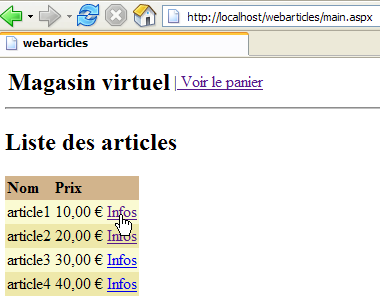 | 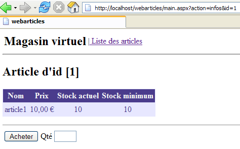 |
 |  |
 |  |
 |  |
 |  |
 |  |
 |  |
 | 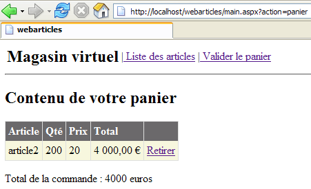 |
 | 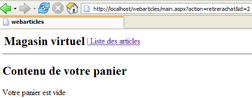 |
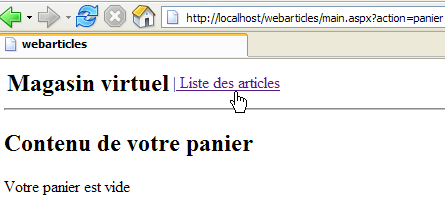 |  |
 |  |
 |  |
2.2.5. 重新审视 [DAO] 层
在我们对 [DAO] 层的首个实现中，[IArticlesDao] 数据访问接口由一个将项目存储在 [ArrayList] 对象中的类来实现。这使我们能够避免让该层过于复杂，并证明只有其接口才重要，而非其具体实现。 因此，我们成功构建了一个可运行的 Web 应用程序。该应用程序包含三个层：[web]、[domain] 和 [dao]。在此，我们将提出 [dao] 层的不同实现方案。每种方案均可替代当前的 [dao] 层，且无需对 [domain] 和 [web] 层进行任何修改。这种灵活性得以实现是因为：
- [domain] 层不直接处理具体类，而是处理 [IArticlesDao] 接口
- 得益于 Spring，我们能够将实现 [IArticlesDao] 接口的类名从 [domain] 层中隐藏起来。
2.2.5.1. [dao]层的组成部分
让我们回顾一下将在新实现中保留的 [dao] 层中的部分元素：
- - [IArticlesDao]：用于访问 [dao] 层的接口
- - [Article]：定义文章的类
2.2.5.2. [Article] 类
定义文章的类如下：
Imports System
Namespace istia.st.articles.dao
Public Class Article
' private fields
Private _id As Integer
Private _nom As String
Private _prix As Double
Private _stockactuel As Integer
Private _stockminimum As Integer
' id article
Public Property id() As Integer
Get
Return _id
End Get
Set(ByVal Value As Integer)
If Value <= 0 Then
Throw New Exception("Le champ id [" + Value.ToString + "] est invalide")
End If
Me._id = Value
End Set
End Property
' item name
Public Property nom() As String
Get
Return _nom
End Get
Set(ByVal Value As String)
If Value Is Nothing OrElse Value.Trim.Equals("") Then
Throw New Exception("Le champ nom [" + Value + "] est invalide")
End If
Me._nom = Value
End Set
End Property
' item price
Public Property prix() As Double
Get
Return _prix
End Get
Set(ByVal Value As Double)
If Value < 0 Then
Throw New Exception("Le champ prix [" + Value.ToString + "] est invalide")
End If
Me._prix = Value
End Set
End Property
' current stock item
Public Property stockactuel() As Integer
Get
Return _stockactuel
End Get
Set(ByVal Value As Integer)
If Value < 0 Then
Throw New Exception("Le champ stockActuel [" + Value.ToString + "] est invalide")
End If
Me._stockactuel = Value
End Set
End Property
' minimum stock item
Public Property stockminimum() As Integer
Get
Return _stockminimum
End Get
Set(ByVal Value As Integer)
If Value < 0 Then
Throw New Exception("Le champ stockMinimum [" + Value.ToString + "] est invalide")
End If
Me._stockminimum = Value
End Set
End Property
' default builder
Public Sub New()
End Sub
' builder with properties
Public Sub New(ByVal id As Integer, ByVal nom As String, ByVal prix As Double, ByVal stockactuel As Integer, ByVal stockminimum As Integer)
Me.id = id
Me.nom = nom
Me.prix = prix
Me.stockactuel = stockactuel
Me.stockminimum = stockminimum
End Sub
' article identification method
Public Overrides Function ToString() As String
Return "[" + id.ToString + "," + nom + "," + prix.ToString + "," + stockactuel.ToString + "," + stockminimum.ToString + "]"
End Function
End Class
End Namespace
该类提供：
- 一个用于设置项目 5 项信息的构造函数：[id, name, price, currentStock, minimumStock]
- 用于读写这5项信息的公共属性。
- 对商品输入数据的验证。若数据无效，将抛出异常。
- 一个 toString 方法，用于将商品的值转换为字符串。这在调试应用程序时通常非常有用。
2.2.5.3. [IArticlesDao] 接口
[IArticlesDao] 接口定义如下：
Imports System
Imports System.Collections
Namespace istia.st.articles.dao
Public Interface IArticlesDao
' list of all items
Function getAllArticles() As IList
' add an article
Function ajouteArticle(ByVal unArticle As Article) As Integer
' deletes an article
Function supprimeArticle(ByVal idArticle As Integer) As Integer
' modify an article
Function modifieArticle(ByVal unArticle As Article) As Integer
' search for an article
Function getArticleById(ByVal idArticle As Integer) As Article
' deletes all articles
Sub clearAllArticles()
' changes the stock of an item
Function changerStockArticle(ByVal idArticle As Integer, ByVal mouvement As Integer) As Integer
End Interface
End Namespace
接口中各方法的作用如下：
返回数据源中的所有文章 | |
清空数据源 | |
返回由编号标识的 [Article] 对象 | |
允许您向数据源添加一篇文章 | |
允许您修改数据源中的文章 | |
允许您从数据源中删除一项 | |
允许您修改数据源中某项的库存 |
该接口为客户端程序提供了一系列仅由其签名定义的方法。它不关心这些方法将如何实际实现。这为应用程序带来了灵活性。客户端程序调用的是接口本身，而非其特定的实现。
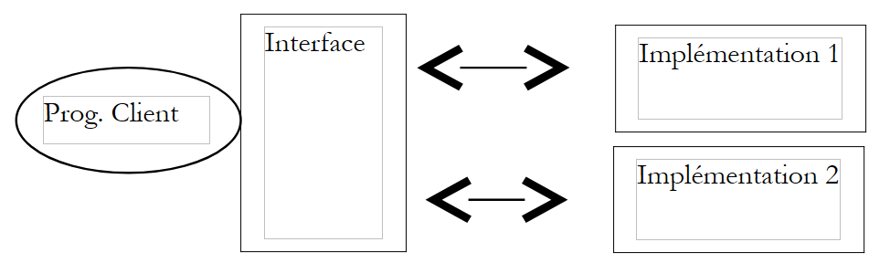 |
具体实现的选择是通过 Spring 配置文件来完成的。
2.3. [ArticlesDaoPlainODBC] 实现类
我们提出了一种新的 [dao] 层实现方案，该方案假设数据位于 ODBC 数据源中。 我们知道，在 Windows 系统上，市面上几乎所有数据库管理系统（DBMS）都提供 ODBC 驱动程序。该方案的优势在于，可以在应用程序完全不知情的情况下切换数据库管理系统。其缺点是，仅利用所有数据库管理系统共有的功能的 ODBC 驱动程序，通常不如专门为充分发挥特定数据库管理系统潜力而编写的驱动程序高效。有关创建 ODBC 数据源的示例，请参见第 3.7 节。
2.3.1. 代码
2.3.1.1. 框架
[ArticlesDaoPlainODBC] 类通过以下方式实现了 [IArticlesDao] 接口：
注释：
- 第 3 行：导入包含用于访问 ODBC 源的 .NET 类的命名空间
- 第 11 行 - 将存储与 ODBC 数据源的连接
- 第 12 行 - 存储数据源的 DSN 名称
- 第 13–19 行：类型为 [OdbcCommand] 的私有变量，用于定义该类各种方法所使用的 SQL 查询
- 第 22–27 行：构造函数。它接收构建 [OdbcConnection] 对象所需的元素，该对象将代码与 ODBC 数据源连接起来
- 第 29–31 行：添加项的方法
- 第 33–35 行：用于更改项目库存的方法
- 第 37–39 行：从 ODBC 数据源中删除所有商品的方法
- 第 41–43 行：从 ODBC 数据源检索所有项目列表的方法
- 第 45–47 行 – 用于检索特定商品的方法
- 第 49–51 行——允许您修改已知编号的商品的特定字段的方法
- 第 53–55 行 – 允许根据商品编号删除商品的方法
- 第 57–60 行 - 实用方法，用于对数据源执行 [SELECT] 并返回结果
- 第 62–64 行 – 用于在数据源上执行 [INSERT、UPDATE、DELETE] 并返回结果的辅助方法
2.3.1.2. 该
注释：
- 第 2 行 - 构造函数接收连接 ODBC 源所需的三个信息：源的 DSN 名称、用于连接的用户名以及相应的密码。
- 第 8 行 - 存储源的 DSN 名称，以便将其包含在错误消息中。
- 第 9 行 - 实例化 [OdbcConnection] 对象。实例化的连接并非已打开的连接。需使用 [open] 方法来打开连接。
- 第 12–19 行 – 我们通过 [OdbcCommand] 对象预先准备 SQL 查询。这样可以避免每次需要时都重新构建查询。查询中的形式参数 ? 在执行查询时将被实际值替换。
2.3.1.3. executeQuery 方法
注释：
- [executeQuery] 方法是一个实用方法，用于：
- 在数据源上执行查询 [SELECT id, name, price, currentStock, minimumStock from ARTICLES ...]
- 将结果作为 [Article] 对象列表返回
- 第 1 行 - 该方法的唯一参数是包含待执行 [Select] 查询的 [OdbcCommand] 对象。
- 第 7 行 - 打开连接。无论是否发生错误，该连接都将在第 29 行关闭。
- 第 9 行 - 实例化处理 [Select] 结果所需的 [OdbcDataReader] 对象
- 第 13–23 行 – [Select] 查询生成的每一行都被放入一个 [Article] 对象中，然后该对象被添加到 [ArrayList] 中的其他文章中
- 第 25 行返回项目列表
- 未处理任何异常。这些异常必须由调用此方法的代码进行处理。
2.3.1.4. executeUpdate 方法
评论：
- 该方法接收一个 [OdbcCommand] 对象，其中包含类型为 [Insert、Update、Delete] 的 SQL 查询。
- 连接在第 5 行打开。无论是否发生异常，连接都将在第 10 行关闭。
- 更新查询在第 7 行执行。结果——即该查询修改的 ARTICLES 表中的行数——会立即返回。
2.3.1.5. addArticle 方法
注释：
- 第 1 行 - 该方法接收要添加到 ODBC 数据源的项。它返回此操作影响的行数，即 1 或 0
- 第 3 行和第 20 行 - 该方法已进行同步。所有数据访问方法均采用此做法。这意味着每次仅有一个线程可以操作该数据源。这种做法可能过于保守。存在更好的替代方案，特别是将这些操作包含在事务中。在这种情况下，数据库管理系统（DBMS）将负责管理并发访问。 我们不希望在此阶段引入事务概念。Spring 允许我们在 [领域] 层引入事务。我们可能会在另一篇文章中重新探讨这一话题。
- 第 5–12 行向由构造函数初始化的 [insertCommand] 对象的查询形式参数赋值。查询语句如下：
insertCommand = New OdbcCommand("insert into ARTICLES(id, nom, prix, stockactuel, stockminimum) values (?,?,?,?,?)", connexion)
查询所需的 5 个值由第 7–11 行提供。
- 第 13–19 行：执行查询。如果成功，则返回结果。否则，将抛出一个带有明确错误消息的通用异常
2.3.1.6. modifieArticle 方法
注释：
- 第 1 行 - 该方法从 ODBC 数据源接收待修改的项目。它返回受此操作影响的行数，即 1 或 0
- 此处可包含 [addItem] 方法的注释
2.3.1.7. deleteArticle 方法
注释：
- 第 1 行 - 该方法从 ODBC 数据源接收待删除项的 ID。它返回受此操作影响的行数，即 1 或 0
- 此处可包含 [addItem] 方法的注释
2.3.1.8. getAllArticles 方法
注释：
- 第 1 行 - 该方法不带参数。它返回来自 ODBC 数据源的所有项目的列表
- 用于检索所有记录的 [Select] 查询被传递给 [executeQuery] 方法——第 6 行
- 第 8 行返回生成的列表
- 第 9–12 行处理任何异常
2.3.1.9. getArticleById 方法
注释：
- 第 1 行 - 该方法将所需项目的 ID 作为参数接收。如果该项目在 ODBC 源中被找到，则返回该项目；否则，返回引用 [nothing]。
- 第 5–8 行初始化了用于查询该项目的 [Select] 查询
- 并在第 12 行执行——获取项目列表
- 若该列表为空，则第 14 行返回引用 [nothing]
- 否则，第 16 行将渲染列表中的唯一项目
- 第 17–20 行处理任何异常
2.3.1.10. clearAllArticles 方法
注释：
- 第 1 行 - 该方法不带参数，也不返回任何值
- 第 6 行 - 执行删除所有项的查询
- 第 7–10 行：处理任何异常
2.3.1.11. changerStockArticle 方法
注释：
- 第 1 行 - 该方法接收两个参数：需要修改库存的商品编号，以及库存增量（正数或负数）。它返回操作修改的行数，即 0 或 1。
- 第 5–10 行：初始化 [updateStockCommand] 查询。以下是 SQL 查询语句：
updateStockCommand = New OdbcCommand("update ARTICLES set stockactuel=stockactuel+? where id=? and (stockactuel+?)>=0", connexion)
请注意，只有当修改后的库存量仍大于等于 0 时，才会修改库存。
- 用于更新商品库存的查询在第 13 行执行，结果返回
- 第 14–18 行，并在该处处理任何异常
2.3.2. 生成 [DAO] 层程序集
此新版 [dao] 层的 Visual Studio 项目具有以下结构：

该项目配置为生成一个名为 [webarticles-dao.dll] 的 DLL：
 |  |
2.3.3. 针对 [dao] 层的 NUnit 测试
2.3.3.1. 在 中创建ODBC-Firebird数据源
为了测试我们新的 [DAO] 层，我们需要一个 ODBC 数据源，因此也需要一个数据库。我们使用 Firebird 数据库管理系统（第 3.5 节）。通过 IBExpert（第 3.6 节），我们创建了以下文章数据库：
 |  |
该数据库的管理员将是用户 [SYSDBA]，密码为 [masterkey]。我们创建了几个记录：
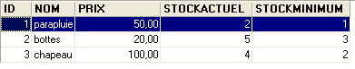
现在，我们创建以下 Firebird ODBC 数据源（参见第 3.7 节）：
 |
创建的 ODBC 源具有以下特征：
- DSN 名称：odbc-firebird-articles
- 连接 ID：SYSDBA
- 关联密码：masterkey
2.3.3.2. 针对 [dao] 层的 NUnit 测试类
我们已经为最初构建的 [dao] 层编写了一个测试类。如果读者还记得，该类测试的并非某个具体类，而是 [IArticlesDao] 接口：
Imports System
Imports System.Collections
Imports NUnit.Framework
Imports istia.st.articles.dao
Imports System.Threading
Imports Spring.Objects.Factory.Xml
Imports System.IO
Namespace istia.st.articles.tests
<TestFixture()> _
Public Class NunitTestArticlesArrayList
' the test object
Private articlesDao As IArticlesDao
<SetUp()> _
Public Sub init()
' retrieve an instance of the Spring object manufacturer
Dim factory As XmlObjectFactory = New XmlObjectFactory(New FileStream("spring-config.xml", FileMode.Open))
' request instantiation of articlesdao object
articlesDao = CType(factory.GetObject("articlesdao"), IArticlesDao)
End Sub
....
我们可以看到，在 <Setup()> 方法中，我们向 Spring 请求了一个名为 [articlesdao] 的单例的引用，其类型为 [IArticlesDao]，即接口类型。该 [articlesdao] 单例是由以下 [spring-config.xml] 配置文件定义的：
<?xml version="1.0" encoding="iso-8859-1" ?>
<!DOCTYPE objects PUBLIC "-//SPRING//DTD OBJECT//EN"
"http://www.springframework.net/dtd/spring-objects.dtd">
<objects>
<object id="articlesdao" type="istia.st.articles.dao.ArticlesDaoArrayList, webarticles-dao"/>
</objects>
让我们演示一下，初始测试类如何让我们无需修改或重新编译即可测试新的 [dao] 层。
- 在 Visual Studio 中，针对我们新的 [dao] 层，通过复制初始 [dao] 层测试项目中的 [bin] 文件夹（如下图左侧所示），创建 [tests] 文件夹（如下图右侧所示）。如有需要，读者可参阅本文第一部分中关于 [dao] 层第一版测试项目的说明。
 |  |
- 在 [tests] 文件夹中，将旧 [dao] 层中的 [webarticles-dao.dll] DLL 替换为新 [dao] 层中的 [webarticles-dao.dll] DLL
- 修改配置文件 [spring-config.xml] 以实例化新类 [ArticlesDaoPlainODBC]：
注释：
- 第 6 行，[articlesdao] 对象现已与 [ArticlesDaoPlainODBC] 类的实例相关联
- 该类有一个带三个参数的构造函数：
- DSN 源名称 - 第 8 行
- 用于访问数据库的身份凭据 - 第 11 行
- 与该身份关联的密码 - 第 14 行
这里，我们使用的是之前创建的 ODBC-Firebird 源中的信息。
2.3.3.3. 测试
现在我们可以开始运行测试了。使用 [Nunit-Gui] 应用程序，从上文的 [tests] 文件夹中加载 [test-webarticles-dao.dll] DLL，并运行 [testGetAllArticles] 测试：
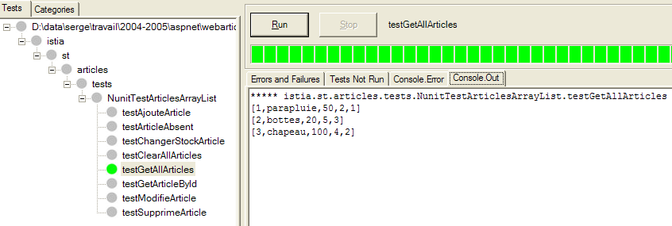
观察上方的截图，我们可能会对最初给测试类命名的 [NUnitTestArticlesDaoArrayList] 感到后悔。这个名字容易引起混淆。实际上，这里被测试的确实是 [ArticlesDaoPlainODBC] 类。截图显示，我们已正确检索到了存放在 [ARTICLES] 表中的文章。现在，让我们运行所有测试：
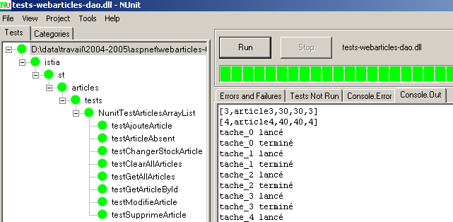
在左侧窗口中，我们可以看到已测试方法的列表。每个方法名称前面的圆点颜色表示该方法是否通过（绿色）或失败（红色）。在屏幕上查看本文的读者会看到所有测试均已成功。
2.3.3.4. 结论
我们刚刚演示了：
- 由于 NUnit 测试类引用的不是类而是接口；
- 因为实例化该接口的类确切名称是在配置文件中提供的，而非在代码中；
- 因为 Spring 负责实例化该类，并在测试代码中提供对其的引用；
因此，为初始 [dao] 层编写的测试代码对该层的新实现仍然有效。我们无需访问测试类的源代码，仅使用其编译版本——即在测试初始 [dao] 层时生成的版本。当需要将新的 [dao] 层集成到 [webarticles] 应用程序时，我们也将得出类似的结论。
2.3.4. 将新的 [dao] 层集成到 [webarticles] 应用程序中
2.3.4.1. 集成测试
回顾一下，[webarticles] 应用程序的初始版本部署在以下 [runtime] 文件夹中：
| |
建议读者查阅第 2.2.4 节，该节详细介绍了 [webarticles] 应用程序的部署流程。我们对 [runtime] 文件夹的内容进行如下修改：
- 在 [bin] 文件夹中，旧的 [dao] 层的 DLL 被新的 [dao] 层的 DLL 替换
- 在 [runtime] 中，将配置文件 [web.config] 替换为一个支持 [dao] 层新实现类的文件：
 |
 |
新的 [web.config] 配置文件如下：
注释：
- 第 14–24 行将 [articlesDao] 单例与新 [ArticlesDaoPlainODBC] 类的实例关联起来。这是唯一的改动。我们在测试新的 [dao] 层时已经遇到过这种情况。
我们已准备好进行测试。我们按照第 2.2.4 节中的方法配置 [Cassini] Web 服务器。我们使用以下值初始化 [Firebird] 的 product 表：

请确保 Cassini Web 服务器和 [Firebird] 数据库管理系统正在运行。使用浏览器访问 URL [http://localhost/webarticles/main.aspx]：
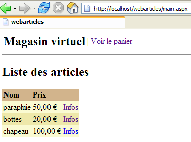
 |
现在，让我们查看 [Firebird] 数据库中 [ARTICLES] 表的内容：

商品 [umbrella] 和 [boots] 已被购买，其库存量已按购买数量相应减少。商品 [hat] 无法购买，因为请求的数量超过了库存量。我们邀请读者进行进一步的测试。
2.3.4.2. 结论
我们做了什么？
- 我们回滚到了上一版本的部署版本；
- 我们将 [dao] 层的 DLL 替换为新版本。 [web] 和 [domain] 层的 DLL 保持不变；
- 我们修改了 [web.config] 配置文件，使其适应 [dao] 层的新实现类
所有这些操作都十分简洁，使得Web应用程序的演进变得非常容易。这些重要特性源于两个架构选择：
- 通过接口访问各层
- 通过 Spring 进行各层的集成与配置。
我们现在提出一种新的 [dao] 层实现方案。
2.4. 实现类 [ArticlesDaoSqlServer]
[dao]层的第二种实现假设数据存储在SQL Server数据库中。微软提供了一个名为MSDE的数据库管理系统（DBMS），它是SQL Server的精简版。关于如何获取并安装该软件的说明，请参见附录第3.12节。
2.4.1. 代码
[ArticlesDaoSqlServer] 类与之前讨论的 [ArticlesDaoPlainODBC] 类非常相似。因此，我们将仅重点说明相较于前一版本所做的修改：
- 所需的类位于 [System.Data.SqlClient] 命名空间中，而非 [System.Data.Odbc] 命名空间
- [OdbcConnection] 连接对象现为 [SqlConnection] 类型
- [OdbcCommand] 对象现在是 [SqlCommand] 类型
- 带参数的 SQL 查询语法已发生变化。插入查询现在如下所示：
insertCommand = New SqlCommand("insert into ARTICLES(id, nom, prix, stockactuel, stockminimum) values (@id,@nom,@prix,@sa,@sm)", connexion)
而之前是这样的：
insertCommand = New OdbcCommand("insert into ARTICLES(id, nom, prix, stockactuel, stockminimum) values (?,?,?,?,?)", connexion)
- [addItem] 方法随后变为如下形式：
Public Function ajouteArticle(ByVal unArticle As Article) As Integer Implements IArticlesDao.ajouteArticle
' exclusive section
SyncLock Me
' prepare the insertion request
With insertCommand.Parameters
.Clear()
.Add(New SqlParameter("@id", unArticle.id))
.Add(New SqlParameter("@nom", unArticle.nom))
.Add(New SqlParameter("@prix", unArticle.prix))
.Add(New SqlParameter("@sa", unArticle.stockactuel))
.Add(New SqlParameter("@sm", unArticle.stockminimum))
End With
Try
'it is executed
Return executeUpdate(insertCommand)
Catch ex As Exception
'query error
Throw New Exception(String.Format("Erreur à l'ajout de l'article [{0}] : {1}", unArticle.ToString, ex.Message))
End Try
End SyncLock
End Function
- 构造函数也进行了修改：
Public Sub New(ByVal serveur As String, ByVal databaseName As String, ByVal uid As String, ByVal password As String)
' server: instance name SQL server to reach
' databaseName: name of the database to be reached
' uid: user identity
' password: your password
'retrieve the name of the database passed as an argument
Me.databaseName = databaseName
'we instantiate the connection
Dim connectString As String = String.Format("Data Source={0};Initial Catalog={1};UID={2};PASSWORD={3}", serveur, databaseName, uid, password)
connexion = New SqlConnection(connectString)
' prepare SQL requests
insertCommand = New SqlCommand("insert into ARTICLES(id, nom, prix, stockactuel, stockminimum) values (@id,@nom,@prix,@sa,@sm)", connexion)
...
End Sub
构造函数现在接受四个参数：
' server: instance name SQL server to reach
' databaseName: name of the database to be reached
' uid: user identity
' password: your password
[ArticlesDaoSqlServer] 类的完整代码如下：
Imports System
Imports System.Collections
Imports System.Data.SqlClient
Namespace istia.st.articles.dao
Public Class ArticlesDaoSqlServer
Implements istia.st.articles.dao.IArticlesDao
' private fields
Private connexion As SqlConnection = Nothing
Private databaseName As String
Private insertCommand As SqlCommand
Private updatecommand As SqlCommand
Private deleteSomeCommand As SqlCommand
Private selectSomeCommand As SqlCommand
Private updateStockCommand As SqlCommand
Private deleteAllCommand As SqlCommand
Private selectAllCommand As SqlCommand
' manufacturer
Public Sub New(ByVal serveur As String, ByVal databaseName As String, ByVal uid As String, ByVal password As String)
' server: instance name SQL server to reach
' databaseName: name of the database to be reached
' uid: user identity
' password: your password
'retrieve the name of the database passed as an argument
Me.databaseName = databaseName
'we instantiate the connection
Dim connectString As String = String.Format("Data Source={0};Initial Catalog={1};UID={2};PASSWORD={3}", serveur, databaseName, uid, password)
connexion = New SqlConnection(connectString)
' prepare SQL requests
insertCommand = New SqlCommand("insert into ARTICLES(id, nom, prix, stockactuel, stockminimum) values (@id,@nom,@prix,@sa,@sm)", connexion)
updatecommand = New SqlCommand("update ARTICLES set nom=@nom, prix=@prix, stockactuel=@sa, stockminimum=@sm where id=@id", connexion)
deleteSomeCommand = New SqlCommand("delete from ARTICLES where id=@id", connexion)
selectSomeCommand = New SqlCommand("select id, nom, prix, stockactuel, stockminimum from ARTICLES where id=@id", connexion)
updateStockCommand = New SqlCommand("update ARTICLES set stockactuel=stockactuel+@mvt where id=@id and (stockactuel+@mvt)>=0", connexion)
selectAllCommand = New SqlCommand("select id, nom, prix, stockactuel, stockminimum from ARTICLES", connexion)
deleteAllCommand = New SqlCommand("delete from ARTICLES", connexion)
End Sub
Public Function ajouteArticle(ByVal unArticle As Article) As Integer Implements IArticlesDao.ajouteArticle
' exclusive section
SyncLock Me
' prepare the insertion request
With insertCommand.Parameters
.Clear()
.Add(New SqlParameter("@id", unArticle.id))
.Add(New SqlParameter("@nom", unArticle.nom))
.Add(New SqlParameter("@prix", unArticle.prix))
.Add(New SqlParameter("@sa", unArticle.stockactuel))
.Add(New SqlParameter("@sm", unArticle.stockminimum))
End With
Try
'it is executed
Return executeUpdate(insertCommand)
Catch ex As Exception
'query error
Throw New Exception(String.Format("Erreur à l'ajout de l'article [{0}] : {1}", unArticle.ToString, ex.Message))
End Try
End SyncLock
End Function
Public Function changerStockArticle(ByVal idArticle As Integer, ByVal mouvement As Integer) As Integer Implements IArticlesDao.changerStockArticle
' exclusive section
SyncLock Me
' prepare the stock update request
With updateStockCommand.Parameters
.Clear()
.Add(New SqlParameter("@mvt", mouvement))
.Add(New SqlParameter("@id", idArticle))
End With
'it is executed
Try
Return executeUpdate(updateStockCommand)
Catch ex As Exception
'query error
Throw New Exception(String.Format("Erreur lors du changement de stock [idArticle={0}, mouvement={1}] : [{2}]", idArticle, mouvement, ex.Message))
End Try
End SyncLock
End Function
Public Sub clearAllArticles() Implements IArticlesDao.clearAllArticles
' exclusive section
SyncLock Me
Try
'execute the insertion request
executeUpdate(deleteAllCommand)
Catch ex As Exception
'query error
Throw New Exception(String.Format("Erreur lors de la suppression des articles : {0}", ex.Message))
End Try
End SyncLock
End Sub
Public Function getAllArticles() As System.Collections.IList Implements IArticlesDao.getAllArticles
' exclusive section
SyncLock Me
Try
'execute the select query
Dim articles As IList = executeQuery(selectAllCommand)
'we return the list
Return articles
Catch ex As Exception
'query error
Throw New Exception(String.Format("Erreur lors de l'obtention des articles [select id,nom,prix,stockactuel,stockminimum from articles]: {0}", ex.Message))
End Try
End SyncLock
End Function
Public Function getArticleById(ByVal idArticle As Integer) As Article Implements IArticlesDao.getArticleById
' exclusive section
SyncLock Me
' prepare the select query
With selectSomeCommand.Parameters
.Clear()
.Add(New SqlParameter("@id", idArticle))
End With
'it is executed
Try
'execute the query
Dim articles As IList = executeQuery(selectSomeCommand)
'we test if we've found the article
If articles.Count = 0 Then Return Nothing
'we return the item
Return CType(articles.Item(0), Article)
Catch ex As Exception
'query error
Throw New Exception(String.Format("Erreur lors de la recherche de l'article [{0} : {1}", idArticle, ex.Message))
End Try
End SyncLock
End Function
Public Function modifieArticle(ByVal unArticle As Article) As Integer Implements IArticlesDao.modifieArticle
' exclusive section
SyncLock Me
' prepare the update request
With updatecommand.Parameters
.Clear()
.Add(New SqlParameter("@nom", unArticle.nom))
.Add(New SqlParameter("@prix", unArticle.prix))
.Add(New SqlParameter("@sa", unArticle.stockactuel))
.Add(New SqlParameter("@sm", unArticle.stockminimum))
.Add(New SqlParameter("@id", unArticle.id))
End With
' it is executed
Try
'execute the insertion request
Return executeUpdate(updatecommand)
Catch ex As Exception
'query error
Throw New Exception("Erreur lors de la modification de l'article [" + unArticle.ToString + "]", ex)
End Try
End SyncLock
End Function
Public Function supprimeArticle(ByVal idArticle As Integer) As Integer Implements IArticlesDao.supprimeArticle
' exclusive section
SyncLock Me
' prepare the delete request
With deleteSomeCommand.Parameters
.Clear()
.Add(New SqlParameter("@id", idArticle))
End With
'it is executed
Try
'execute the delete request
Return executeUpdate(deleteSomeCommand)
Catch ex As Exception
'query error
Throw New Exception(String.Format("Erreur lors de la suppression de l'article [id={0}] : {1}", idArticle, ex.Message))
End Try
End SyncLock
End Function
Private Function executeQuery(ByVal query As SqlCommand) As IList
' query execution SELECT
' declaration of the object providing access to all rows in the result table
Dim myReader As SqlDataReader = Nothing
Try
'create a connection to BDD
connexion.Open()
'execute the query
myReader = query.ExecuteReader()
'declare a list of items and return it later
Dim articles As IList = New ArrayList
Dim unArticle As Article
While myReader.Read()
'we prepare an article with the reader's values
unArticle = New Article
unArticle.id = myReader.GetInt32(0)
unArticle.nom = myReader.GetString(1)
unArticle.prix = myReader.GetDouble(2)
unArticle.stockactuel = myReader.GetInt32(3)
unArticle.stockminimum = myReader.GetInt32(4)
'add the item to the list
articles.Add(unArticle)
End While
'returns the result
Return articles
Finally
' freeing up resources
If Not myReader Is Nothing And Not myReader.IsClosed Then myReader.Close()
If Not connexion Is Nothing Then connexion.Close()
End Try
End Function
Private Function executeUpdate(ByVal updateCommand As SqlCommand) As Integer
' execute an update request
Try
'create a connection to BDD
connexion.Open()
'execute the query
Return updateCommand.ExecuteNonQuery()
Finally
' freeing up resources
If Not connexion Is Nothing Then connexion.Close()
End Try
End Function
End Class
End Namespace
建议读者结合前面关于 [ArticlesDaoPlainODBC] 类的注释来审阅这段代码。
2.4.2. 生成 [dao] 层程序集
新的 Visual Studio 项目具有以下结构：

该项目已配置为生成一个名为 [webarticles-dao.dll] 的 DLL：
 |  |
2.4.3. 针对 [dao] 层的 NUnit 测试
2.4.3.1. 创建 SQL Server 数据源
为了测试我们新的 [dao] 层，我们需要一个 SQL Server 数据源，因此需要 SQL Server 数据库管理系统。实际上我们将使用 MSDE（Microsoft Data Engine）数据库管理系统（第 3.12 节），这是一种仅受支持并发用户数量限制的 SQL Server 版本。 使用 [EMS MS SQL Manager]（第 3.14 节），我们在名为 [portable1_tahe\msde140405] 的 MSDE 实例中创建了以下产品数据库：
 |  |

该数据库的所有者为用户 [mdparticles]，密码为 [admarticles]。创建 [ARTICLES] 表的 Transact-SQL 命令如下：
CREATE TABLE [ARTICLES] (
[id] int NOT NULL,
[nom] varchar(20) COLLATE French_CI_AS NOT NULL,
[prix] float(53) NOT NULL,
[stockactuel] int NOT NULL,
[stockminimum] int NOT NULL,
CONSTRAINT [ARTICLES_uq] UNIQUE ([nom]),
PRIMARY KEY ([id]),
CONSTRAINT [ARTICLES_ck_id] CHECK ([id] > 0),
CONSTRAINT [ARTICLES_ck_nom] CHECK ([nom] <> ''),
CONSTRAINT [ARTICLES_ck_prix] CHECK ([prix] >= 0),
CONSTRAINT [ARTICLES_ck_stockactuel] CHECK ([stockactuel] >= 0),
CONSTRAINT [ARTICLES_ck_stockminimum] CHECK ([stockminimum] >= 0)
)
ON [PRIMARY]
GO
我们创建几个项目：

2.4.3.2. NUnit 测试类
针对实现类 [ArticlesDaoSqlServer] 的 NUnit 测试类与 [ArticlesDaoPlainODBC] 类的测试类相同（参见第 2.3.3.2 节）。我们采用类似的方法来准备该类的 NUnit 测试：
- 我们将 [dao-odbc] 项目（左侧）中的 [tests] 文件夹复制到 [dao-sqlserver] 项目的 Visual Studio 文件夹中（右侧），从而创建 [tests] 文件夹：
 |  |
- 在 [dao-sqlserver] 项目的 [tests] 文件夹中，我们将 [webarticles-dao.dll] DLL 替换为 [dao-sqlserver] 项目生成的 [webarticles-dao.dll] DLL
- 修改配置文件 [spring-config.xml] 以实例化新类 [ArticlesDaoSqlServer]：
注释：
- 第 7 行，[articlesdao] 对象现已与 [ArticlesDaoSqlServer] 类的实例相关联
- 该类有一个带四个参数的构造函数：
- 所用 MSDE 实例的名称 - 第 9 行
- 数据库名称 - 第 12 行
- 用于访问数据库的身份 - 第 15 行
- 与该身份关联的密码 - 第 18 行
这里我们使用的是之前创建的 MSDE 源中的信息。
2.4.3.3. 测试
我们已准备好运行测试。使用 [Nunit-Gui] 应用程序，从上文的 [tests] 文件夹中加载 [test-webarticles-dao.dll] DLL，并运行 [testGetAllArticles] 测试：

尽管该测试类最初命名为 [NUnitTestArticlesDaoArrayList]（因我们使用的是由此类派生的 [tests-webarticles-dao.dll] DLL，故保留此名称），但实际上这里测试的正是 [ArticlesDaoSqlserver] 类。 截图显示，我们已正确检索了存放在 [ARTICLES] 表中的文章。现在，让我们运行所有测试：

在左侧窗口中，我们可以看到已测试方法的列表。每个方法名称前面的圆点颜色表示该方法是否通过（绿色）或失败（红色）。在屏幕上查看本文的读者会看到所有测试均已成功。
2.4.4. 将新的 [dao] 层集成到 [webarticles] 应用程序中
我们按照第 2.3.4 节所述的步骤进行操作。对 [runtime] 文件夹的内容进行以下修改：
- 在 [bin] 文件夹中，旧 [dao] 层的 DLL 文件被由 [ArticlesDaoSqlServer] 类实现的新 [dao] 层的 DLL 文件所替换
- 在 [runtime] 中，将配置文件 [web.config] 替换为一个支持新实现类的文件：
注释：
- 第 15–33 行将 [articlesDao] 单例与新 [ArticlesDaoSqlServer] 类的实例关联起来。这是唯一的更改。我们在测试新的 [dao] 层时已经遇到过这种情况
我们已准备好进行测试。我们将保持与之前相同的 [Cassini] Web 服务器配置。我们使用以下值初始化 [MSDE] 产品表：

请确保 Cassini Web 服务器和 MSDE 数据库管理系统（此处为实例 portable1_tahe\msde140405）正在运行。使用浏览器访问 URL [http://localhost/webarticles/main.aspx]：

 |
现在，让我们检查 [MSDE] 数据库中 [ARTICLES] 表的内容：

商品 [soccer ball] 和 [tennis racket] 已成功购买，其库存量已按购买数量相应减少。商品 [roller skates] 因请求数量超过库存量而无法购买。欢迎读者进行进一步测试。
2.4.5. 实现类 [ArticlesDaoOleDb]
2.4.5.1. OleDb 数据源
[dao] 层的第三种实现假设数据存储在可通过 OleDb 驱动程序访问的数据库中。OleDb 数据源的工作原理与 ODBC 数据源类似。使用 OleDb 数据源的程序通过所有 OleDb 数据源共有的标准接口进行操作。更改 OleDb 数据源只需更换 OleDb 驱动程序，代码本身保持不变。
您可以通过 Visual Studio 查看计算机上可用的 OleDb 驱动程序：
- 通过选择 [视图/服务器资源管理器] 来显示服务器资源管理器：

- 要添加新连接，请右键单击 [数据连接]，然后选择 [添加连接] 选项。这将打开一个向导，您可以在其中定义连接设置：

- [提供程序] 窗格中列出了可用的 OLEDB 驱动程序。对于新的 [DAO] 层，我们将使用 [Microsoft Jet 4.0 OLE DB 提供程序] 驱动程序，该驱动程序支持访问 Access 数据库。
- 现在让我们暂时退出 Visual Studio，创建一个包含以下单张表的 ACCESS 数据库 [articles.mdb]：
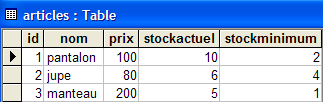
- 该表的结构如下：
数字型 - 整数 - 主键 | |
文本 - 20个字符 - | |
数字 - 双精度 | |
数值 - 整数 | |
数值 - 整数 |
- 让我们回到 Visual Studio，按照之前的说明创建一个新的连接：

- 我们选择 [Microsoft Jet 4.0] 驱动程序，然后转到 [连接] 面板：

- 使用 [1] 按钮选择刚刚创建的 ACCESS 数据库，然后点击 [完成] 按钮完成连接设置。您创建的连接现在会显示在可用连接列表中：

- 双击 [ARTICLES] 表即可查看其内容：

- 随后，您可以在该表中添加、修改或删除行。
- 在“服务器资源管理器”中，选择新连接以访问其“属性”表：

- 了解连接字符串非常有用。我们将使用它来连接数据库：
Provider=Microsoft.Jet.OLEDB.4.0;User ID=Admin;Data Source=D:\data\serge\databases\access\articles\articles.mdb;Mode=Share Deny None;Extended Properties="";Jet OLEDB:System database="";Jet OLEDB:Registry Path="";Jet OLEDB:Engine Type=5;Jet OLEDB:Database Locking Mode=1;Jet OLEDB:Global Partial Bulk Ops=2;Jet OLEDB:Global Bulk Transactions=1;Jet OLEDB:Create System Database=False;Jet OLEDB:Encrypt Database=False;Jet OLEDB:Don't Copy Locale on Compact=False;Jet OLEDB:Compact Without Replica Repair=False;Jet OLEDB:SFP=False
- 从该字符串中，我们将仅保留以下元素：
2.4.5.2. [ArticlesDaoOleDb] 类的代码
[ArticlesDaoOleDb] 类与前面讨论的 [ArticlesDaoPlainODBC] 类非常相似。因此，我们仅列出相对于上一版本所做的更改：
- 所需的类位于 [System.Data.OleDb] 命名空间中，而非 [System.Data.Odbc] 命名空间
- [OdbcConnection] 连接现在类型为 [OleDbConnection]
- [OdbcCommand] 对象现在是 [OleDbCommand] 类型
该类的构造函数接受一个参数：数据库连接字符串：
' manufacturer
Public Sub New(ByVal connectString As String)
' connectString: source connection string OleDb: source connection string connectString: source connection string OleDb: source connection string
'we instantiate the connection
connexion = New OleDbConnection(connectString)
' prepare SQL requests
...
End Sub
[ArticlesDaoOleDb] 类的完整代码如下：
Imports System
Imports System.Collections
Imports System.Data.OleDb
Namespace istia.st.articles.dao
Public Class ArticlesDaoOleDb
Implements istia.st.articles.dao.IArticlesDao
' private fields
Private connexion As OleDbConnection = Nothing
Private insertCommand As OleDbCommand
Private updatecommand As OleDbCommand
Private deleteSomeCommand As OleDbCommand
Private selectSomeCommand As OleDbCommand
Private updateStockCommand As OleDbCommand
Private deleteAllCommand As OleDbCommand
Private selectAllCommand As OleDbCommand
' manufacturer
Public Sub New(ByVal connectString As String)
' connectString: source connection string OleDb: source connection string connectString: source connection string OleDb: source connection string
'we instantiate the connection
connexion = New OleDbConnection(connectString)
' prepare SQL requests
insertCommand = New OleDbCommand("insert into ARTICLES(id, nom, prix, stockactuel, stockminimum) values (?,?,?,?,?)", connexion)
updatecommand = New OleDbCommand("update ARTICLES set nom=?, prix=?, stockactuel=?, stockminimum=? where id=?", connexion)
deleteSomeCommand = New OleDbCommand("delete from ARTICLES where id=?", connexion)
selectSomeCommand = New OleDbCommand("select id, nom, prix, stockactuel, stockminimum from ARTICLES where id=?", connexion)
updateStockCommand = New OleDbCommand("update ARTICLES set stockactuel=stockactuel+? where id=? and (stockactuel+?)>=0", connexion)
selectAllCommand = New OleDbCommand("select id, nom, prix, stockactuel, stockminimum from ARTICLES", connexion)
deleteAllCommand = New OleDbCommand("delete from ARTICLES", connexion)
End Sub
Public Function ajouteArticle(ByVal unArticle As Article) As Integer Implements IArticlesDao.ajouteArticle
' exclusive section
SyncLock Me
' prepare the insertion request
With insertCommand.Parameters
.Clear()
.Add(New OleDbParameter("id", unArticle.id))
.Add(New OleDbParameter("nom", unArticle.nom))
.Add(New OleDbParameter("prix", unArticle.prix))
.Add(New OleDbParameter("stockactuel", unArticle.stockactuel))
.Add(New OleDbParameter("stockminimum", unArticle.stockminimum))
End With
Try
'it is executed
Return executeUpdate(insertCommand)
Catch ex As Exception
'query error
Throw New Exception(String.Format("Erreur à l'ajout de l'article [{0}] : {1}", unArticle.ToString, ex.Message))
End Try
End SyncLock
End Function
Public Function changerStockArticle(ByVal idArticle As Integer, ByVal mouvement As Integer) As Integer Implements IArticlesDao.changerStockArticle
' exclusive section
SyncLock Me
' prepare the stock update request
With updateStockCommand.Parameters
.Clear()
.Add(New OleDbParameter("mvt1", mouvement))
.Add(New OleDbParameter("id", idArticle))
.Add(New OleDbParameter("mvt2", mouvement))
End With
'it is executed
Try
Return executeUpdate(updateStockCommand)
Catch ex As Exception
'query error
Throw New Exception(String.Format("Erreur lors du changement de stock [idArticle={0}, mouvement={1}] : [{2}]", idArticle, mouvement, ex.Message))
End Try
End SyncLock
End Function
Public Sub clearAllArticles() Implements IArticlesDao.clearAllArticles
' exclusive section
SyncLock Me
Try
'execute the insertion request
executeUpdate(deleteAllCommand)
Catch ex As Exception
'query error
Throw New Exception(String.Format("Erreur lors de la suppression des articles : {0}", ex.Message))
End Try
End SyncLock
End Sub
Public Function getAllArticles() As System.Collections.IList Implements IArticlesDao.getAllArticles
' exclusive section
SyncLock Me
Try
'execute the select query
Dim articles As IList = executeQuery(selectAllCommand)
'we return the list
Return articles
Catch ex As Exception
'query error
Throw New Exception(String.Format("Erreur lors de l'obtention des articles [select id,nom,prix,stockactuel,stockminimum from articles]: {0}", ex.Message))
End Try
End SyncLock
End Function
Public Function getArticleById(ByVal idArticle As Integer) As Article Implements IArticlesDao.getArticleById
' exclusive section
SyncLock Me
' prepare the select query
With selectSomeCommand.Parameters
.Clear()
.Add(New OleDbParameter("id", idArticle))
End With
'it is executed
Try
'execute the query
Dim articles As IList = executeQuery(selectSomeCommand)
'we test if we've found the article
If articles.Count = 0 Then Return Nothing
'we return the item
Return CType(articles.Item(0), Article)
Catch ex As Exception
'query error
Throw New Exception(String.Format("Erreur lors de la recherche de l'article [{0} : {1}", idArticle, ex.Message))
End Try
End SyncLock
End Function
Public Function modifieArticle(ByVal unArticle As Article) As Integer Implements IArticlesDao.modifieArticle
' exclusive section
SyncLock Me
' prepare the update request
With updatecommand.Parameters
.Clear()
.Add(New OleDbParameter("nom", unArticle.nom))
.Add(New OleDbParameter("prix", unArticle.prix))
.Add(New OleDbParameter("stockactuel", unArticle.stockactuel))
.Add(New OleDbParameter("stockminimum", unArticle.stockactuel))
.Add(New OleDbParameter("id", unArticle.id))
End With
' it is executed
Try
'execute the insertion request
Return executeUpdate(updatecommand)
Catch ex As Exception
'query error
Throw New Exception("Erreur lors de la modification de l'article [" + unArticle.ToString + "]", ex)
End Try
End SyncLock
End Function
Public Function supprimeArticle(ByVal idArticle As Integer) As Integer Implements IArticlesDao.supprimeArticle
' exclusive section
SyncLock Me
' prepare the delete request
With deleteSomeCommand.Parameters
.Clear()
.Add(New OleDbParameter("id", idArticle))
End With
'it is executed
Try
'execute the delete request
Return executeUpdate(deleteSomeCommand)
Catch ex As Exception
'query error
Throw New Exception(String.Format("Erreur lors de la suppression de l'article [id={0}] : {1}", idArticle, ex.Message))
End Try
End SyncLock
End Function
Private Function executeQuery(ByVal query As OleDbCommand) As IList
' query execution SELECT
' declaration of the object providing access to all rows in the result table
Dim myReader As OleDbDataReader = Nothing
Try
'create a connection to BDD
connexion.Open()
'execute the query
myReader = query.ExecuteReader()
'declare a list of items and return it later
Dim articles As IList = New ArrayList
Dim unArticle As Article
While myReader.Read()
'we prepare an article with the reader's values
unArticle = New Article
unArticle.id = myReader.GetInt32(0)
unArticle.nom = myReader.GetString(1)
unArticle.prix = myReader.GetDouble(2)
unArticle.stockactuel = myReader.GetInt32(3)
unArticle.stockminimum = myReader.GetInt32(4)
'add the item to the list
articles.Add(unArticle)
End While
'returns the result
Return articles
Finally
' freeing up resources
If Not myReader Is Nothing And Not myReader.IsClosed Then myReader.Close()
If Not connexion Is Nothing Then connexion.Close()
End Try
End Function
Private Function executeUpdate(ByVal sqlCommand As OleDbCommand) As Integer
' execute an update request
Try
'create a connection to BDD
connexion.Open()
'execute the query
Return sqlCommand.ExecuteNonQuery()
Finally
' freeing up resources
If Not connexion Is Nothing Then connexion.Close()
End Try
End Function
End Class
End Namespace
建议读者结合前面关于 [ArticlesDaoPlainODBC] 类的注释来审阅这段代码。
2.4.5.3. 生成 [dao] 层程序集
新的 Visual Studio 项目具有以下结构：

该项目已配置为生成一个名为 [webarticles-dao.dll] 的 DLL：
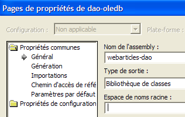 | 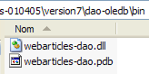 |
2.4.5.4. 针对 [dao] 层的 NUnit 测试
2.4.5.4.1. NUnit 测试类
针对实现类 [ArticlesDaoOleDb] 的 NUnit 测试类与 [ArticlesDaoPlainODBC] 类的测试类相同（参见第 2.3.3.2 节）。我们采用类似的方法来准备该类的 NUnit 测试：
- 通过将 [dao-odbc] 项目（左侧）中的 [tests] 文件夹复制到 [dao-oledb] 项目的 Visual Studio 文件夹中（右侧），创建 [tests] 文件夹：
|  |
- 在 [dao-oledb] 项目的 [tests] 文件夹中，我们将 [webarticles-dao.dll] DLL 替换为 [dao-oledb] 项目生成的 [webarticles-dao.dll] DLL
- 修改配置文件 [spring-config.xml] 以实例化新类 [ArticlesDaoOleDb]：
注释：
- 第 7 行，[articlesdao] 对象现已与 [ArticlesDaoOleDb] 类的实例相关联
- 该类有一个带有一个参数的构造函数：连接 OleDb ACCESS 数据库的连接字符串 - 第 9 行
2.4.5.4.2. 测试
现在可以进行测试了。使用 [Nunit-Gui] 应用程序，从上文的 [tests] 文件夹中加载 [test-webarticles-dao.dll] DLL，并运行 [testGetAllArticles] 测试：

尽管测试类最初命名为 [NUnitTestArticlesDaoArrayList]，但实际上这里测试的是 [ArticlesDaoOleDb] 类。截图显示，我们已正确检索到了存放在 [ARTICLES] 表中的文章。现在，让我们运行所有测试：
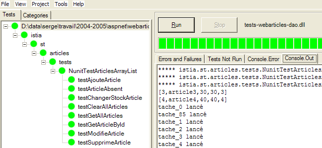
在屏幕上查看本文的读者会看到所有测试均已通过（显示为绿色）。
2.4.5.5. 将新的 [dao] 层集成到 [webarticles] 应用程序中
我们遵循第 2.3.4 节中所述的步骤。对 [runtime] 文件夹的内容进行以下修改：
- 在 [bin] 文件夹中，旧 [dao] 层的 DLL 文件被由 [ArticlesDaoOleDb] 类实现的新 [dao] 层的 DLL 文件所替换
- 在 [runtime] 中，将配置文件 [web.config] 替换为一个支持新实现类的文件：
注释：
- 第 14–18 行将 [articlesDao] 单例与新 [ArticlesDaoOleDb] 类的实例关联起来。这是唯一的更改。
我们保留与之前相同的 [Cassini] Web 服务器配置。我们使用以下值初始化产品表：
请确保 articles 数据库未被 Visual Studio 或 Access 等程序占用。使用浏览器，我们请求 URL [http://localhost/webarticles/main.aspx]：

 |
现在，让我们使用 Access 检查 [ARTICLES] 表的内容：
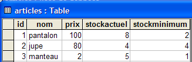
商品 [pants] 和 [skirt] 已成功购买，其库存量已按购买数量相应减少。商品 [coat] 因请求数量超过库存量而无法购买。欢迎读者进行进一步测试。
2.5. 实现类 [ArticlesDaoFirebirdProvider]
2.5.1. Firebird-net-provider
此前我们曾通过 ODBC 驱动程序使用 [Firebird] 数据源。虽然 ODBC 驱动程序能为使用它们的代码提供较高的复用性，但其效率不如专门为目标 DBMS 编写的驱动程序。可以通过 Firebird 网站 [http://firebird.sourceforge.net/] 下载的特定类库来使用 [Firebird] DBMS。 下载页面提供以下链接（2005年4月）：

请点击 [firebird-net-provider] 链接下载用于访问 Firebird DBMS 的 .NET 类。安装该软件包后，会生成一个类似于以下结构的文件夹：

其中有两项内容值得我们关注：
- [FirebirdSql.Data.Firebird.dll]：包含用于访问 Firebird 数据库管理系统（DBMS）的 .NET 类的程序集
- [FirebirdNETProviderSDK.chm]：这些类的文档
接下来，为了使 Visual Studio 项目能够使用这些类，我们将进行两项操作：
- 将 [FirebirdSql.Data.Firebird.dll] 程序集放置在项目的 [bin] 文件夹中
- 将该程序集添加到项目的引用中
2.5.2. [ArticlesDaoFirebirdProvider] 类的代码
[ArticlesDaoFirebirdProvider] 类与前面讨论的 [ArticlesDaoSqlServer] 类非常相似。因此，我们将仅重点说明与该版本相比所做的更改：
- 所需的类位于 [FirebirdSql.Data.Firebird] 命名空间中，而非 [System.Data.SqlClient] 命名空间
- [SqlConnection] 连接对象现为 [FbConnection] 类型
- [SqlCommand] 对象现在是 [FbCommand] 类型
- [SqlParameter] 对象现在类型为 [FbParameter]
该类的构造函数接受四个参数，并利用这些参数构建连接到数据库的连接字符串：
' manufacturer
Public Sub New(ByVal serveur As String, ByVal databaseName As String, ByVal uid As String, ByVal password As String)
' server: name of the SGBD host machine
' databaseName: path to database
' uid: identity of the user logging in
' password: your password
...
End Sub
[ArticlesDaoFirebirdProvider] 类的完整代码如下：
Imports System
Imports System.Collections
Imports FirebirdSql.Data.Firebird
Namespace istia.st.articles.dao
Public Class ArticlesDaoFirebirdProvider
Implements istia.st.articles.dao.IArticlesDao
' private fields
Private connexion As FbConnection = Nothing
Private databasePath As String
Private insertCommand As FbCommand
Private updatecommand As FbCommand
Private deleteSomeCommand As FbCommand
Private selectSomeCommand As FbCommand
Private updateStockCommand As FbCommand
Private deleteAllCommand As FbCommand
Private selectAllCommand As FbCommand
' manufacturer
Public Sub New(ByVal serveur As String, ByVal databasePath As String, ByVal uid As String, ByVal password As String)
' server: name of the SGBD Firebird host machine
' databaseName: path to the database to be used
' uid: identity of the user connecting to the database
' password: your password
'retrieve the name of the database passed as an argument
Me.databasePath = databasePath
'we instantiate the connection
Dim connectString As String = String.Format("DataSource={0};Database={1};User={2};Password={3}", serveur, databasePath, uid, password)
connexion = New FbConnection(connectString)
' prepare SQL requests
insertCommand = New FbCommand("insert into ARTICLES(id, nom, prix, stockactuel, stockminimum) values (@id,@nom,@prix,@sa,@sm)", connexion)
updatecommand = New FbCommand("update ARTICLES set nom=@nom, prix=@prix, stockactuel=@sa, stockminimum=@sm where id=@id", connexion)
deleteSomeCommand = New FbCommand("delete from ARTICLES where id=@id", connexion)
selectSomeCommand = New FbCommand("select id, nom, prix, stockactuel, stockminimum from ARTICLES where id=@id", connexion)
updateStockCommand = New FbCommand("update ARTICLES set stockactuel=stockactuel+@mvt where id=@id and (stockactuel+@mvt)>=0", connexion)
selectAllCommand = New FbCommand("select id, nom, prix, stockactuel, stockminimum from ARTICLES", connexion)
deleteAllCommand = New FbCommand("delete from ARTICLES", connexion)
End Sub
Public Function ajouteArticle(ByVal unArticle As Article) As Integer Implements IArticlesDao.ajouteArticle
' exclusive section
SyncLock Me
' prepare the insertion request
With insertCommand.Parameters
.Clear()
.Add(New FbParameter("@id", unArticle.id))
.Add(New FbParameter("@nom", unArticle.nom))
.Add(New FbParameter("@prix", unArticle.prix))
.Add(New FbParameter("@sa", unArticle.stockactuel))
.Add(New FbParameter("@sm", unArticle.stockminimum))
End With
Try
'it is executed
Return executeUpdate(insertCommand)
Catch ex As Exception
'query error
Throw New Exception(String.Format("Erreur à l'ajout de l'article [{0}] : {1}", unArticle.ToString, ex.Message))
End Try
End SyncLock
End Function
Public Function changerStockArticle(ByVal idArticle As Integer, ByVal mouvement As Integer) As Integer Implements IArticlesDao.changerStockArticle
' exclusive section
SyncLock Me
' prepare the stock update request
With updateStockCommand.Parameters
.Clear()
.Add(New FbParameter("@mvt", mouvement))
.Add(New FbParameter("@id", idArticle))
End With
'it is executed
Try
Return executeUpdate(updateStockCommand)
Catch ex As Exception
'query error
Throw New Exception(String.Format("Erreur lors du changement de stock [idArticle={0}, mouvement={1}] : [{2}]", idArticle, mouvement, ex.Message))
End Try
End SyncLock
End Function
Public Sub clearAllArticles() Implements IArticlesDao.clearAllArticles
' exclusive section
SyncLock Me
Try
'execute the insertion request
executeUpdate(deleteAllCommand)
Catch ex As Exception
'query error
Throw New Exception(String.Format("Erreur lors de la suppression des articles : {0}", ex.Message))
End Try
End SyncLock
End Sub
Public Function getAllArticles() As System.Collections.IList Implements IArticlesDao.getAllArticles
' exclusive section
SyncLock Me
Try
'execute the select query
Dim articles As IList = executeQuery(selectAllCommand)
'we return the list
Return articles
Catch ex As Exception
'query error
Throw New Exception(String.Format("Erreur lors de l'obtention des articles [select id,nom,prix,stockactuel,stockminimum from articles]: {0}", ex.Message))
End Try
End SyncLock
End Function
Public Function getArticleById(ByVal idArticle As Integer) As Article Implements IArticlesDao.getArticleById
' exclusive section
SyncLock Me
' prepare the select query
With selectSomeCommand.Parameters
.Clear()
.Add(New FbParameter("@id", idArticle))
End With
'it is executed
Try
'execute the query
Dim articles As IList = executeQuery(selectSomeCommand)
'we test if we've found the article
If articles.Count = 0 Then Return Nothing
'we return the item
Return CType(articles.Item(0), Article)
Catch ex As Exception
'query error
Throw New Exception(String.Format("Erreur lors de la recherche de l'article [{0} : {1}", idArticle, ex.Message))
End Try
End SyncLock
End Function
Public Function modifieArticle(ByVal unArticle As Article) As Integer Implements IArticlesDao.modifieArticle
' exclusive section
SyncLock Me
' prepare the update request
With updatecommand.Parameters
.Clear()
.Add(New FbParameter("@nom", unArticle.nom))
.Add(New FbParameter("@prix", unArticle.prix))
.Add(New FbParameter("@sa", unArticle.stockactuel))
.Add(New FbParameter("@sm", unArticle.stockminimum))
.Add(New FbParameter("@id", unArticle.id))
End With
' it is executed
Try
'execute the insertion request
Return executeUpdate(updatecommand)
Catch ex As Exception
'query error
Throw New Exception("Erreur lors de la modification de l'article [" + unArticle.ToString + "]", ex)
End Try
End SyncLock
End Function
Public Function supprimeArticle(ByVal idArticle As Integer) As Integer Implements IArticlesDao.supprimeArticle
' exclusive section
SyncLock Me
' prepare the delete request
With deleteSomeCommand.Parameters
.Clear()
.Add(New FbParameter("@id", idArticle))
End With
'it is executed
Try
'execute the delete request
Return executeUpdate(deleteSomeCommand)
Catch ex As Exception
'query error
Throw New Exception(String.Format("Erreur lors de la suppression de l'article [id={0}] : {1}", idArticle, ex.Message))
End Try
End SyncLock
End Function
Private Function executeQuery(ByVal query As FbCommand) As IList
' query execution SELECT
' declaration of the object providing access to all rows in the result table
Dim myReader As FbDataReader = Nothing
Try
'create a connection to BDD
connexion.Open()
'execute the query
myReader = query.ExecuteReader()
'declare a list of items and return it later
Dim articles As IList = New ArrayList
Dim unArticle As Article
While myReader.Read()
'we prepare an article with the reader's values
unArticle = New Article
unArticle.id = myReader.GetInt32(0)
unArticle.nom = myReader.GetString(1)
unArticle.prix = myReader.GetDouble(2)
unArticle.stockactuel = myReader.GetInt32(3)
unArticle.stockminimum = myReader.GetInt32(4)
'add the item to the list
articles.Add(unArticle)
End While
'returns the result
Return articles
Finally
' freeing up resources
If Not myReader Is Nothing And Not myReader.IsClosed Then myReader.Close()
If Not connexion Is Nothing Then connexion.Close()
End Try
End Function
Private Function executeUpdate(ByVal updateCommand As FbCommand) As Integer
' execute an update request
Try
'create a connection to BDD
connexion.Open()
'execute the query
Return updateCommand.ExecuteNonQuery()
Finally
' freeing up resources
If Not connexion Is Nothing Then connexion.Close()
End Try
End Function
End Class
End Namespace
建议读者结合前面关于 [ArticlesDaoSqlServer] 类的注释来审阅此代码。
2.5.3. 生成 [dao] 层程序集
新的 Visual Studio 项目具有以下结构：

请注意项目引用中包含 [FirebirdSql.Data.Firebird.dll] 程序集。该 DLL 已放置在项目的 [bin] 文件夹中。该项目已配置为生成一个名为 [webarticles-dao.dll] 的 DLL：
 | 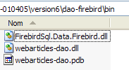 |
2.5.4. 针对 [dao] 层的 NUnit 测试
2.5.4.1. NUnit 测试类
针对实现类 [ArticlesDaoFirebirdProvider] 的 NUnit 测试类与 [ArticlesDaoPlainODBC] 类的测试类相同（参见第 2.3.3.2 节）。我们采用类似的方法来准备 [ArticlesDaoFirebirdProvider] 类的 NUnit 测试：
- 通过将 [dao-odbc] 层测试项目（左侧）中的 [bin] 文件夹复制到 [dao-firebird-provider] 项目的 Visual Studio 文件夹中，创建 [tests] 文件夹（右侧）：
|  |
- 在 [tests] 文件夹中，我们将 [webarticles-dao.dll] DLL 替换为由 [dao-firebird-provider] 项目生成的 [webarticles-dao.dll] DLL
- 我们修改配置文件 [spring-config.xml] 以实例化新类 [ArticlesDaoFirebirdProvider]：
注释：
- 第 7 行，[articlesdao] 对象现已与 [ArticlesDaoFirebirdProvider] 类的实例相关联
- 该类有一个带四个参数的构造函数
- DBMS 主机 - 第 9 行
- Firebird 数据库的路径 - 第 12 行
- 连接用户的登录名 - 第 15 行
- 其密码 - 第 18 行
2.5.4.2. 测试
数据源中的 [ARTICLES] 表包含以下数据（使用 IBExpert）：

我们已准备好运行测试。使用 [Nunit-Gui] 应用程序，从上方的 [tests] 文件夹加载 [test-webarticles-dao.dll] DLL，并运行 [testGetAllArticles] 测试：

尽管测试类最初命名为 [NUnitTestArticlesDaoArrayList]，但实际上这里测试的是 [ArticlesDaoFirebirdProvider] 类。截图显示，我们已正确检索到存放在 [ARTICLES] 表中的文章。现在，让我们运行所有测试：

在屏幕上查看本文的读者会看到所有测试均已通过（显示为绿色）。但他们无法看到的是，与我们在首次实现中通过 ODBC 驱动程序访问文章数据库相比，这些测试的运行速度显著提升。
2.5.5. 将新的 [dao] 层集成到 [webarticles] 应用程序中
我们遵循已两次说明的流程，特别是第 2.3.4 节中的说明。我们对 [runtime] 文件夹的内容进行以下修改：
- 在 [bin] 文件夹中，将旧 [dao] 层的 DLL 替换为由 [ArticlesDaoFirebirdProvider] 类实现的新 [dao] 层 DLL。同时，我们将 Firebird 所需的 DLL [FirebirdSql.Data.Firebird.dll] 放置于此：

- 在 [runtime] 中，将配置文件 [web.config] 替换为一个支持新实现类的文件：
注释：
- 第 14–27 行将 [articlesDao] 单例与新 [ArticlesDaoFirebirdProvider] 类的实例关联起来。这是唯一的更改。
现在可以进行测试了。我们按照之前的测试配置 [Cassini] Web 服务器。我们使用以下值初始化 articles 表：

使用浏览器，我们输入 URL [http://localhost/webarticles/main.aspx]：

 |
现在让我们检查 [ARTICLES] 表中的内容：

商品 [铅笔] 和 [50 页笔记本] 已成功购买，其库存量已按购买数量相应减少。商品 [钢笔] 因请求数量超过库存量而无法购买。欢迎读者进行更多测试。
2.5.6. 实现类 [ArticlesDaoSqlMap]
2.5.6.1. Ibatis SqlMap 产品
我们为 [webarticles] 应用程序编写了四种不同的 [dao] 层实现。在每种情况下，我们都能将新的 [dao] 层集成到 [webarticles] 应用程序中，而无需重新编译另外两个层——[web] 和 [domain]。需要提醒的是，这是通过以下两个架构选择实现的：
- 通过接口访问各层
- 使用 Spring 集成各层
我们希望更进一步。尽管各不相同，但这四种 [dao] 层的实现却有着惊人的相似之处。一旦写好了第一个实现，其余三个几乎完全是通过复制粘贴并替换某些关键字来完成的。然而，逻辑却始终未变。人们可能会想，是否有可能有一个单一的实现，让我们摆脱各种数据访问方法的束缚。我们已经使用了四种：
- 通过 ODBC 驱动程序访问 ODBC 数据源
- 直接访问 SQL Server 数据库
- 通过 Ole DB 驱动程序访问 Ole DB 数据源
- 直接访问 Firebird 数据库
Ibatis SqlMap 工具 [[http://www.ibatis.com/]] 支持开发与数据源实际特性无关的数据访问层。数据访问通过以下方式实现：
- 包含定义数据源及其操作信息的配置文件
- 一个利用这些信息访问数据的类库
Ibatis SqlMap 工具最初是为 Java 平台开发的。其移植到 .NET 平台的时间较短，且似乎存在部分缺陷（此为个人观点，尚需彻底验证）。尽管如此，鉴于该工具已在 Java 平台上证明了其价值，介绍其 .NET 版本似乎仍具有意义。
2.5.6.2. 在哪里可以找到 IBATIS SqlMap ？
Firebird 官方网站为 [http://www.ibatis.com/]。其下载页面提供了以下链接：

选择 [Stable Binaries] 链接，该链接将引导您前往 [SourceForge.net]。请按照下载流程操作直至完成。您将获得一个 ZIP 压缩包，其中包含以下文件：

在使用 iBatis SqlMap 的 Visual Studio 项目中，您需要完成两项操作：
- 将上述文件放置在项目的 [bin] 文件夹中
- 将这些文件分别添加为项目引用
2.5.6.3. iBatis SqlMap 配置文件
将使用以下配置文件定义 [SqlMap] 数据源：
- providers.config：定义用于访问数据的类库
- sqlmap.config：定义连接设置
- 映射文件：定义对数据执行的操作
这些文件背后的逻辑如下：
- 要访问数据，我们需要建立连接。为此，我们已经接触过几个类：OdbcConnection、SqlConnection、OleDbConnection、FbConnection。我们还需要一个 [Command] 对象来执行 SQL 查询：OdbcCommand、SqlCommand、OleDbCommand、FbCommand 等。在 [providers.config] 文件中，我们定义了所有需要的类。
- [sqlmap.config] 文件主要定义了连接包含数据的数据库的连接字符串。数据库连接将通过实例化 [providers.config] 中定义的 [Connection] 类来建立，其构造函数将接收 [sqlmap.config] 中定义的连接字符串。
- 映射文件定义了：
- 数据表中的行与 .NET 类之间的关联，这些类的实例将包含这些行
- 待执行的 SQL 操作。这些操作通过名称进行标识。.NET 代码通过名称执行这些操作，从而将所有 SQL 代码从 .NET 代码中移除。
2.5.6.4. [dao-sqlmap] 项目的配置文件
让我们通过一个示例来详细了解 SqlMap 配置文件的具体性质。我们将考虑第 2.3.3.1 节中提到的 Firebird ODBC 数据源的情况。
2.5.6.4.1. providers.config
ODBC 数据源的 [providers.config] 文件如下：
注释：
- [SqlMap] 包中包含了一个 [providers.config] 文件。它提供了几个标准提供程序。上面的代码直接摘自该文件。
- <provider> 具有一个名称（第 6 行），该名称可以是任意内容
- 一个 <provider> 可以启用 [enabled=true] 或禁用 [enabled=false]。如果启用，则第 8 行引用的 DLL 必须可访问。一个 [providers.config] 文件可以包含多个 <provider> 标签。
- 第 8 行 - 包含第 9-15 行所定义类的程序集名称
- 第 9 行 - 用于建立连接的类
- 第 10 行 - 用于创建 [Command] 对象以执行 SQL 命令的类
- 第 11 行 - 用于管理带参数 SQL 命令参数的类
- 第 12 行 - 表字段可能数据类型的枚举类
- 第 13 行 - [Parameter] 对象中包含该参数值类型的属性的名称
- 第 14 行 - 用于从数据源创建 [DataSet] 对象的 [Adapter] 类名称
- 第 15 行 - [CommandBuilder] 类的名称，当与 [Adapter] 对象关联时，会根据其 [SelectCommand] 属性自动生成 [InsertCommand、DeleteCommand、UpdateCommand] 属性
- 第 16–19 行 – 定义如何处理带参数的 SQL 命令。根据具体情况，您可以编写如下代码：
或者
在第一种情况下，这些是形式位置参数。其实际值必须按照形式参数的顺序提供。在第二种情况下，这些是命名参数。通过指定其名称为该参数提供值。顺序不再重要。
- 第 16 行 - 表明 ODBC 数据源使用位置参数
- 第17–19行——涉及命名参数。此处没有命名参数。
这些信息使 SqlMap 能够知道，例如，它必须实例化哪个类来建立连接。在此处，该类将是 [OdbcConnection] 类（第 9 行）。
2.5.6.4.2. sqlmap.config
[providers.config] 文件定义了用于访问 ODBC 数据源的类。它并未指定任何 ODBC 数据源。这由 [sqlmap.config] 文件负责：
注释：
- 第 3 行 - 我们定义了一个属性文件 [properties.xml]。该文件定义了键值对。键可以是任意内容。在 [sqlmap.config] 中，使用 ${C} 这种表示法来获取与键 C 关联的值。以下是与前面的 [sqlmap.config] 文件关联的 [properties.xml] 文件：
第 3 行 - 定义了 [provider] 键。其值为将在 [providers.config] 中使用的 <provider> 标签的名称
第 4 行 - 定义了 [connectionString] 键。其值为用于连接 Firebird ODBC 数据源的连接字符串。
- 第 4-7 行 - 配置参数：
- 第 5 行 - SQL 查询将通过名称进行标识，该名称本身可能属于某个命名空间。[useStatementNamespaces="false"] 表示不使用命名空间。
- 第 6 行 - SqlMap 提供多种缓存策略以减少对数据源的访问。[cacheModelsEnabled="false"] 表示不使用任何缓存策略。
- 第 9–13 行 – 定义数据源属性：
- 第 10 行 - 指定要使用的来自 [providers.config] 的 <provider> 名称
- 第 11 行 - 数据源的连接字符串
- 第 12 行 - 事务管理器。此处未使用该功能，但因其在标准分发文件中，故保留此行。
- 第 14–16 行 – 定义将在数据源上执行的 SQL 操作的文件列表。
- 第 15 行 - 定义映射文件 [articles.xml]
2.5.6.4.3. articles.xml
该文件有两个用途：
- 为数据源表定义对象映射。在最简单的情况下，这相当于将一个类与表中的一行相关联。
- 定义参数化 SQL 操作并为其命名。
我们将使用以下 [articles.xml] 文件：
注释：
- 第 4-11 行 - 我们定义了数据源中 [ARTICLES] 表的一行与 [istia.st.articles.dao.Article] 类之间的映射。 表中的每一列都与 [Article] 类的某个属性相关联。此映射使 [SqlMap] 能够构建 SQL SELECT 操作的结果。SELECT 语句返回的每一行结果都将根据映射规则被放入 [Article] 对象中。
- 第 5 行 - 映射被包含在 <resultMap> 标签中，并通过 [id="article"] 属性进行命名。关联的类由 [class="istia.st.articles.dao.Article"] 属性指定。
- 第 14–44 行 – 定义了所需的 SQL 操作
- 第 16–18 行 – 定义了一个名为 [getAllArticles] 的 SELECT 操作
- 第 16 行 - 该 SELECT 操作命名为 [name="getAllArticles"]，并通过 [resultMap="article"] 属性定义了要使用的映射。这指的是第 5–11 行中的映射
- 第 17 行 - 待执行的 SQL 命令正文
- 第 20–22 行 – 定义 SQL-Delete 命令 [clearAllArticles] 以清空 articles 表。
- 第 24–27 行 – 我们定义 SQL-Insert 命令 [insertArticle]，用于向 items 表添加新条目。这是一个使用参数 (#id#, #name#, #price#, #currentStock#, #minStock#) 的参数化查询。 这五个元素的值将来自作为参数传递的 [Article] 对象：[parameterClass="istia.st.articles.dao.Article"]。该参数对象必须包含参数化 SQL 命令所引用的属性（id、name、price、currentStock、minimumStock）。
- 第 29-31 行 - 我们定义了 SQL 删除命令 [deleteArticle]，用于删除编号为 #value# 的商品。该编号将作为参数传递：[parameterClass="int"]。这是一条通用规则。当参数是唯一的，SQL 命令文本中将通过关键字 #value# 引用它。
- 第 33–35 行 – 我们定义了 SQL-Update 命令 [modifyArticle]，用于修改已知编号的商品。与 [insertArticle] 命令类似，所需的五项信息将来自 [istia.st.articles.dao.Article] 对象的属性。
- 第 37–39 行 – 我们定义了 SQL-Select 命令 [getArticleById]，用于检索编号已知的项目的记录。
- 第 41–43 行 - 我们定义了 SQL-Update 命令 [changerStockArticle]，用于修改已知编号的项目的 [stockactuel] 字段。所需的两项信息——项目的 #id# 和库存增量 #mouvement#——将从字典 [parameterClass="Hashtable"] 中获取。该字典必须包含两个键：id 和 mouvement。 这两个键对应的值将在 SQL 命令中使用。
2.5.6.4.4. 配置文件的位置
我们将考虑两种不同的场景：
- 如果是 Nunit 测试，[SqlMap] 配置文件将放置在被测二进制文件所在的同一文件夹中。
- 如果是 Web 应用程序，则将它们放置在应用程序根目录下。
2.5.6.5. SqlMap API
SqlMap 类包含在 DLL 文件中，这些文件通常放置在应用程序的 [bin] 文件夹中：

使用 SqlMap 类的应用程序必须导入 [IBatisNet.DataMapper] 命名空间：
所有 SQL 操作均通过 [Mapper] 类型的单例对象执行，该类位于 [IBatisNet.DataMapper] 命名空间中。获取该单例对象的方法如下：
要执行 SqlMap 命令 [getAllArticles]，我们编写如下代码：
- [QueryForList] 方法将 SELECT 命令的结果作为列表返回
- 第一个参数是要执行的 SQL 命令的名称（参见 articles.xml）
- 第二个参数是要传递给 SQL 查询的参数。它必须与 SqlMap 命令的 [parameterClass] 属性相对应。在 [articles.xml] 中，我们有 [parameterClass=Nothing]。因此，我们在此处传递一个空指针。
- 结果类型为 IList。该列表中的对象由 SQL-select 命令的 [resultMap] 属性指定：[resultMap="article"]。“article” 是一个映射名称：
与该映射关联的类是 [istia.st.articles.dao.Article]。最终，上面定义的 [articles] 变量是一个由 [istia.st.articles.dao.Article] 对象组成的列表。因此，我们仅通过一条语句就检索到了整个 [ARTICLES] 表。如果 [ARTICLES] 表为空，我们将得到一个包含 0 个元素的 [IList] 对象。
要执行 SqlMap 命令 [getArticleById]，我们编写：
- [QueryForObject] 方法用于检索仅返回一行数据的 SELECT 语句的结果
- 第一个参数是要执行的 SqlMap 命令的名称
- 第二个参数是要传递给 SQL 查询的参数。它必须与 SqlMap 命令的 [parameterClass] 属性相对应。在 [articles.xml] 中，我们有 [parameterClass="int"]。因此，我们在此处传递一个整数，该整数代表要搜索的文章的 ID。
- 结果类型为 Object。如果 SELECT 未返回任何行，则结果为空指针（无内容）。
要执行 SqlMap [insertArticle] 命令，我们编写：
- [Insert] 方法允许您执行 SQL INSERT 命令
- 第一个参数是要执行的 SqlMap 命令的名称
- 第二个参数是要传递给该命令的参数。它必须与 SqlMap 命令的 [parameterClass] 属性相对应。在 [articles.xml] 中，我们有 [parameterClass="istia.st.articles.dao.Article"]。因此，我们在此处传递一个类型为 [istia.st.articles.dao.Article] 的对象。
要执行 SqlMap 命令 [deleteArticle]，我们编写：
- [Delete] 方法允许您执行 SQL DELETE 命令
- 第一个参数是要执行的 SQL 命令名称
- 第二个参数是要传递给该命令的参数。它必须与 SqlMap 命令的 [parameterClass] 属性相对应。在 [articles.xml] 中，我们有 [parameterClass="int"]。因此，我们在此处传递要删除的文章的 ID。
- [Delete] 方法的返回值为已删除的行数
同样地，要执行 SqlMap 命令 [clearAllArticles]，我们编写：
要执行 SqlMap 命令 [modifyArticle]，我们编写如下代码：
- [Update] 方法允许您执行 SQL UPDATE 命令
- 第一个参数是要执行的 SqlMap 命令的名称
- 第二个参数是要传递给它的参数。它必须与 SqlMap 命令的 [parameterClass] 属性相对应。在 [articles.xml] 中，我们有 [parameterClass="istia.st.articles.dao.Article"]。因此，我们在此处传递一个类型为 [istia.st.articles.dao.Article] 的对象。
- [Update] 方法的返回值是修改的行数。
同样地，要执行 SqlMap 命令 [changerStockArticle]，我们应编写如下代码：
Dim paramètres As New Hashtable(2)
paramètres("id") = idArticle
paramètres("mouvement") = mouvement
' update
dim nbLignes as Integer= mappeur.Update("changerStockArticle", paramètres)
- 第二个参数对应于 SqlMap 命令的 [parameterClass] 属性。在 [articles.xml] 中，我们定义了 [parameterClass="Hashtable"]。参数化 SQL 命令 [changeItemStock] 使用 [id, movement] 这两个参数。因此，我们在此处传递一个包含这两个键的字典。
2.5.6.6. [ArticlesDaoSqlMap]类的代码
根据前面的说明，我们现在可以编写以下新的实现类 [ArticlesDaoSqlMap]：
Option Explicit On
Option Strict On
Imports System
Imports IBatisNet.DataMapper
Imports System.Collections
Namespace istia.st.articles.dao
Public Class ArticlesDaoSqlMap
Implements IArticlesDao
' private fields
Dim mappeur As SqlMapper = Mapper.Instance
' list of all items
Public Function getAllArticles() As IList Implements IArticlesDao.getAllArticles
SyncLock Me
Try
Return mappeur.QueryForList("getAllArticles", Nothing)
Catch ex As Exception
Throw New Exception("Echec de l'obtention de tous les articles : [" + ex.ToString + "]")
End Try
End SyncLock
End Function
' add an item
Public Function ajouteArticle(ByVal unArticle As Article) As Integer Implements IArticlesDao.ajouteArticle
SyncLock Me
Try
' unArticle : item to add
' insertion
mappeur.Insert("insertArticle", unArticle)
Return 1
Catch ex As Exception
Throw New Exception("Echec de l'ajout de l'article [" + unArticle.ToString + "] : [" + ex.ToString + "]")
End Try
End SyncLock
End Function
' deletes an article
Public Function supprimeArticle(ByVal idArticle As Integer) As Integer Implements IArticlesDao.supprimeArticle
SyncLock Me
Try
' id : id of item to be deleted
' delete
Return mappeur.Delete("deleteArticle", idArticle)
Catch ex As Exception
Throw New Exception("Erreur lors de la suppression de l'article d'id [" + idArticle.ToString + "] : [" + ex.ToString + "]")
End Try
End SyncLock
End Function
' modify an article
Public Function modifieArticle(ByVal unArticle As Article) As Integer Implements IArticlesDao.modifieArticle
SyncLock Me
Try
' update
Return mappeur.Update("modifyArticle", unArticle)
Catch ex As Exception
Throw New Exception("Erreur lors de la mise à jour de l'article [" + unArticle.ToString + "] : [" + ex.ToString + "]")
End Try
End SyncLock
End Function
' article search
Public Function getArticleById(ByVal idArticle As Integer) As Article Implements IArticlesDao.getArticleById
SyncLock Me
Try
' id: id of the item searched for
Return CType(mappeur.QueryForObject("getArticleById", idArticle), Article)
Catch ex As Exception
Throw New Exception("Erreur lors de la recherche de l'article d'id [" + idArticle.ToString + "] : [" + ex.ToString + "]")
End Try
End SyncLock
End Function
' delete all items
Public Sub clearAllArticles() Implements IArticlesDao.clearAllArticles
SyncLock Me
Try
mappeur.Delete("clearAllArticles", Nothing)
Catch ex As Exception
Throw New Exception("Erreur lors de l'effacement de la table des articles : [" + ex.ToString + "]")
End Try
End SyncLock
End Sub
' change the stock of an item
Public Function changerStockArticle(ByVal idArticle As Integer, ByVal mouvement As Integer) As Integer Implements IArticlesDao.changerStockArticle
SyncLock Me
Try
' id: id of the item whose stock is being changed
' movement: stock movement
Dim paramètres As New Hashtable(2)
paramètres("id") = idArticle
paramètres("mouvement") = mouvement
' update
Return mappeur.Update("changerStockArticle", paramètres)
Catch ex As Exception
Throw New Exception(String.Format("Erreur lors du changement de stock [{0},{1}] : {2}", idArticle, mouvement, ex.ToString))
End Try
End SyncLock
End Function
End Class
End Namespace
建议读者结合 SqlMap API 的相关说明来审阅此代码。值得注意的是，使用 [SqlMap] 显著减少了所需的代码量。
2.5.6.7. 生成 [dao] 层程序集
新的 Visual Studio 项目具有以下结构：

请注意项目引用中包含 SqlMap 所需的“程序集”。这些 DLL 文件已放置在项目的 [bin] 文件夹中。该项目已配置为生成一个名为 [webarticles-dao.dll] 的 DLL：
 |  |
2.5.6.8. 针对 [dao] 层的 NUnit 测试
2.5.6.8.1. NUnit 测试类
针对实现类 [ArticlesDaoSqlMap] 的 NUnit 测试类与 [ArticlesDaoPlainODBC] 类的测试类相同（参见第 2.3.3.2 节）。我们采用类似的方法来准备 [ArticlesDaoSqlMap] 类的 NUnit 测试：
- 我们将 [dao-odbc] 项目（左侧）中的 [tests] 文件夹复制到 [dao-sqlmap] 项目的 Visual Studio 文件夹中，从而创建 [test1] 文件夹（右侧）：
|  |
- 在 [tests] 文件夹中，我们将 [webarticles-dao.dll] DLL 替换为由 [dao-sqlmap] 项目生成的 [webarticles-dao.dll] DLL。
- 我们添加 SqlMap 所需的 DLL 文件，以及之前讨论过的配置文件 [providers.config, sqlmap.config, properties.xml, articles.xml]。
- 我们修改配置文件 [spring-config.xml] 以实例化新类 [ArticlesDaoSqlMap]：
注释：
- 第 7 行：[articlesdao] 对象现已与 [ArticlesDaoSqlMap] 类的实例相关联
- 该类没有构造函数。将使用默认构造函数。
2.5.6.8.2. 测试
Firebird 数据源中的 [ARTICLES] 表已填充以下文章：
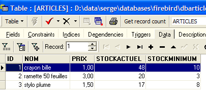
现在可以进行测试了。使用 [Nunit-Gui] 应用程序，从上面的 [test1] 文件夹加载 [test-webarticles-dao.dll] DLL，并运行 [testGetAllArticles] 测试：

尽管测试类最初命名为 [NUnitTestArticlesDaoArrayList]，但实际上这里测试的是 [ArticlesDaoSqlMap] 类。截图显示，我们已正确检索到存放在 [ARTICLES] 表中的文章。现在，让我们运行所有测试：

在屏幕上查看本文的读者会发现，部分测试通过（绿色），但也有部分测试失败（红色）。失败的测试包括 [testArticleAbsent] 和 [testChangerStockArticle]。经过深入排查，这些失败的原因似乎如下：
- 在 [testArticleAbsent] 中，我们试图修改一个不存在的项目。为此我们使用了 [modifieArticle] 方法，该方法返回修改行的数量（0 或 1）。在此处，我们本应得到 0。但实际上，我们却遇到了类型为 [IBatisNet.Common.Exceptions.ConcurrentException] 的异常。
- 在 [changerStockArticle] 中，存在另一项 [update] 类型的操作。该操作涉及将库存减少的数量大于当前库存。为此，使用了 [changerStockArticle] 方法，该方法返回修改行数为 0 或 1。 SQL 语句的编写旨在防止导致库存水平变为负数的更新操作（参见 articles.xml 中的“changerStockArticle”SQL 语句）。在此，我们预期 [changerStockArticle] 方法的结果为 0。然而，我们再次收到类型为 [IBatisNet.Common.Exceptions.ConcurrentException] 的异常。
可能的错误来源有很多：
- [ArticlesDaoSqlMap] 类中的代码有误。这种情况是有可能的。不过，该代码是从一个 Java 类移植而来的，而该类在 Java 版本的 SqlMap 中运行正常。
- .NET 版本的 SqlMap 存在缺陷
- Firebird ODBC 驱动程序存在缺陷
- ……
在无法确定原因的情况下，我们将通过捕获 [IBatisNet.Common.Exceptions.ConcurrentException] 来绕过此问题。[ArticlesDaoSqlMap] 类的更新代码如下：
更改位于第 28、41 和 69 行。 对于 [UPDATE, DELETE] 类型的 SQL 操作，如果发生 [IBatisNet.Common.Exceptions.ConcurrentException] 类型的异常，则返回 0 作为结果，从而表示未修改或删除任何行。完成上述操作后，将重新生成项目的 DLL，将其放置在 [test1] 文件夹中，并重新运行 NUnit 测试：

这次运行成功了。接下来我们将使用这个 DLL。
2.5.6.9. 将新的 [dao] 层集成到 [webarticles] 应用程序中
2.5.6.9.1. ODBC 数据源
在此我们测试第 2.3.3.1 节中讨论的 ODBC 数据源。此处通过 SqlMap 调用该数据源。
我们按照第 2.3.4 节所述的步骤进行操作。对 [runtime] 文件夹的内容进行以下修改：
- 在 [bin] 文件夹中，将旧 [dao] 层的 DLL 替换为由 [ArticlesDaoSqlMap] 类实现的新 [dao] 层的 DLL。我们添加了 Firebird 和 SqlMap 所需的 DLL：

- 在 [runtime] 中，放置 SqlMap 配置文件 [providers.config、sqlmap.config、properties.xml、articles.xml]：

- 在 [runtime] 目录中，配置文件 [web.config] 被替换为一个考虑了新实现类的文件：
注释：
- 第 14 行将 [articlesDao] 单例与新 [ArticlesDaoSqlMap] 类的实例关联起来。这是唯一的更改。
现在我们可以运行测试了。我们将按照之前测试中的做法配置 [Cassini] Web 服务器。我们将向 articles 表中插入以下数据：

使用浏览器，我们请求 URL [http://localhost/webarticles/main.aspx]：
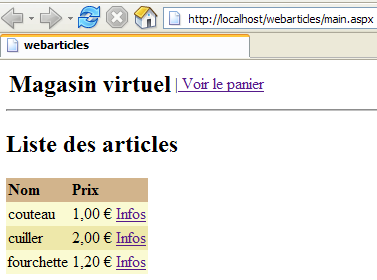
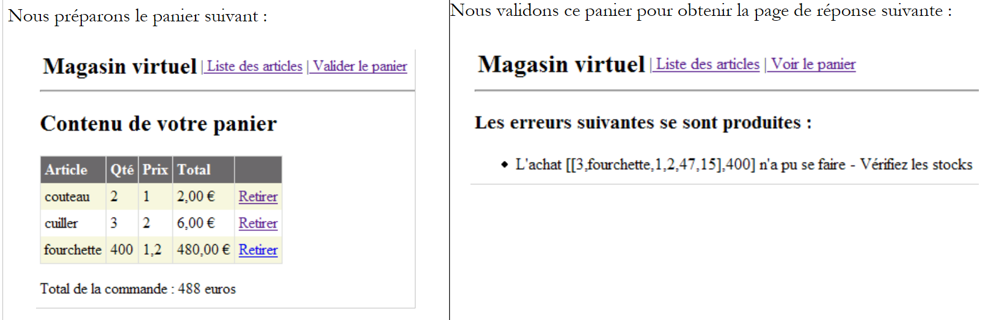 |
现在让我们查看 [ARTICLES] 表中的内容：

商品 [knife] 和 [spoon] 已成功购买，其库存量已按购买数量相应减少。商品 [fork] 因请求数量超过库存量而无法购买。欢迎读者进行进一步测试。
2.5.6.9.2. MSDE 数据源
此处我们正在测试第 2.4.3.1 节中讨论的 MSDE 数据源。此处通过 SqlMap 调用该数据源。我们遵循与之前相同的步骤，并对 [runtime] 文件夹的内容进行以下修改：
- [bin] 文件夹的内容保持不变
- 在 [runtime] 文件夹中，SqlMap 配置文件 [providers.config, properties.xml] 已更改。配置文件 [sqlmap.config, articles.xml] 保持不变。
- [providers.config] 文件配置了一个新的 <provider>：
<?xml version="1.0" encoding="utf-8" ?>
<providers>
<clear/>
<provider
name="sqlServer1.1"
assemblyName="System.Data, Version=1.0.5000.0, Culture=neutral, PublicKeyToken=b77a5c561934e089"
connectionClass="System.Data.SqlClient.SqlConnection"
commandClass="System.Data.SqlClient.SqlCommand"
parameterClass="System.Data.SqlClient.SqlParameter"
parameterDbTypeClass="System.Data.SqlDbType"
parameterDbTypeProperty="SqlDbType"
dataAdapterClass="System.Data.SqlClient.SqlDataAdapter"
commandBuilderClass="System.Data.SqlClient.SqlCommandBuilder"
usePositionalParameters = "false"
useParameterPrefixInSql = "true"
useParameterPrefixInParameter = "true"
parameterPrefix="@"
/>
</providers>
此 <provider> 使用 .NET 类来访问 SQL Server 数据源。它默认包含在 SqlMap 随附的 [providers.config] 模板文件中。
- [properties.xml] 文件定义了 MSDE 数据源的 <provider> 及其连接字符串：
<?xml version="1.0" encoding="utf-8" ?>
<settings>
<add key="provider" value="sqlServer1.1" />
<add
key="connectionString"
value="Data Source=portable1_tahe\msde140405;Initial Catalog=dbarticles;UID=admarticles;PASSWORD=mdparticles;"/>
</settings>
- 在 [运行时] 中，[web.config] 配置文件保持不变。
现在可以进行测试了。[Cassini] Web 服务器保留其常规配置。我们使用 [EMS MS SQL Manager] 在 MSDE 源中初始化 articles 表：

使用浏览器，我们请求 URL [http://localhost/webarticles/main.aspx]：

 |
现在，让我们使用 [EMS MS SQL Manager] 查看 [ARTICLES] 表的内容：
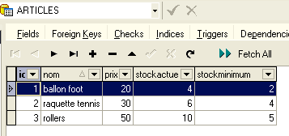
商品 [soccer ball] 和 [tennis racket] 已成功购买，其库存量已按购买数量相应减少。商品 [roller skates] 因请求数量超过库存量而无法购买。欢迎读者进行进一步测试。
2.5.6.9.3. OleDb 数据源
在此我们测试第 2.4.5.1 节中介绍的 ACCESS 数据源。此处通过 SqlMap 调用该数据源。我们遵循与之前相同的步骤，并对 [runtime] 文件夹的内容进行以下修改：
- [bin] 文件夹的内容保持不变
- 在 [runtime] 文件夹中，SqlMap 配置文件 [providers.config, properties.xml] 已更改。配置文件 [sqlmap.config, articles.xml] 保持不变。
- [providers.config] 文件配置了一个新的 <provider>：
<?xml version="1.0" encoding="utf-8" ?>
<providers>
<clear/>
<provider
name="OleDb1.1"
enabled="true"
assemblyName="System.Data, Version=1.0.5000.0, Culture=neutral, PublicKeyToken=b77a5c561934e089"
connectionClass="System.Data.OleDb.OleDbConnection"
commandClass="System.Data.OleDb.OleDbCommand"
parameterClass="System.Data.OleDb.OleDbParameter"
parameterDbTypeClass="System.Data.OleDb.OleDbType"
parameterDbTypeProperty="OleDbType"
dataAdapterClass="System.Data.OleDb.OleDbDataAdapter"
commandBuilderClass="System.Data.OleDb.OleDbCommandBuilder"
usePositionalParameters = "true"
useParameterPrefixInSql = "false"
useParameterPrefixInParameter = "false"
parameterPrefix = ""
/>
</providers>
此 <provider> 使用 .NET 类来访问 OleDb 数据源。它默认包含在 SqlMap 随附的 [providers.config] 模板文件中。
- [properties.xml] 文件定义了 OleDb 源 <provider> 及其连接字符串：
<?xml version="1.0" encoding="utf-8" ?>
<settings>
<add key="provider" value="OleDb1.1" />
<add
key="connectionString"
value="Provider=Microsoft.Jet.OLEDB.4.0;Data Source=D:\data\serge\databases\access\articles\articles.mdb;"/>
</settings>
- 在 [运行时] 中，[web.config] 配置文件保持不变。
现在可以进行测试了。[Cassini] Web 服务器保留其常规配置。我们按以下方式从 ACCESS 源初始化 articles 表：

使用浏览器，我们请求 URL [http://localhost/webarticles/main.aspx]：

 |
现在，让我们使用以下语句查看 [ARTICLES] 表的内容：

商品 [pants] 和 [skirt] 已成功购买，其库存量已按购买数量相应减少。商品 [coat] 因请求数量超过库存量而未能购买。欢迎读者进行进一步测试。
2.5.7. 结论
本篇长篇教程至此结束。我们完成了哪些内容？
- 我们通过四种不同的方式实现了三层 Web 应用程序的 [DAO] 层：
- 使用 .NET 访问类连接 ODBC 数据源
- 使用 .NET 访问类连接 SQL Server 数据源
- 使用 .NET 访问类连接 OleDb 数据源
- 使用第三方访问类访问 Firebird 数据库
- 每次，我们都将新的 [DAO] 层集成到三层 [webarticles] 应用程序 [Web、Domain、DAO] 中，而无需重新编译 [Web、Domain] 层
- 最终，我们引入了 [SqlMap] 工具，它使我们能够创建一个 [DAO] 层，该层能够以对代码透明的方式适配不同的数据源。因此，借助这一新层，我们得以依次使用之前实现 1 至 3 中的数据源。这一过程是通过配置文件以透明的方式实现的。
- 我们展示了Spring和SqlMap工具为三层Web应用程序带来的强大灵活性。